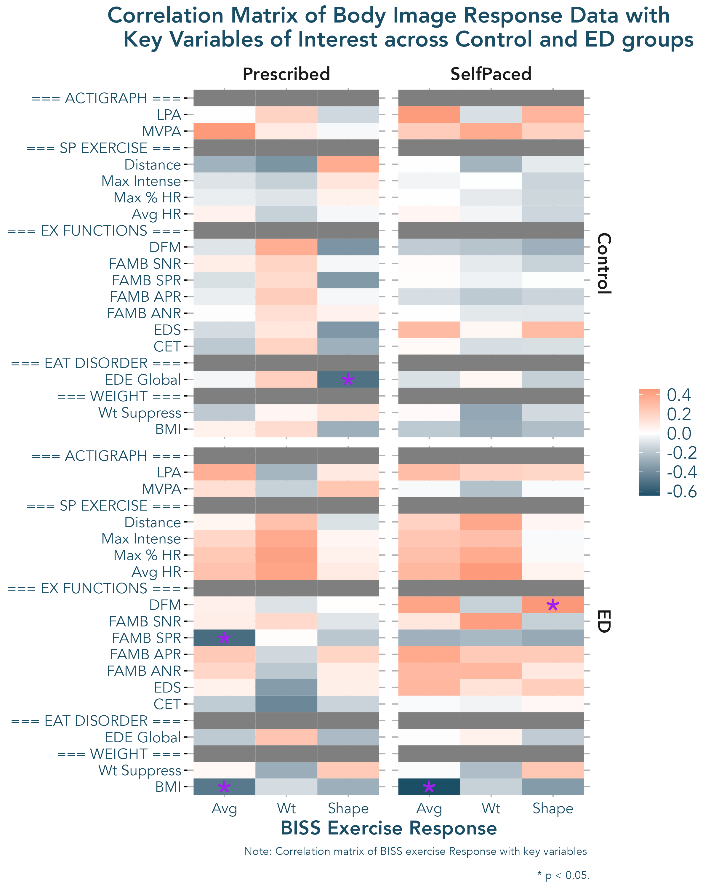
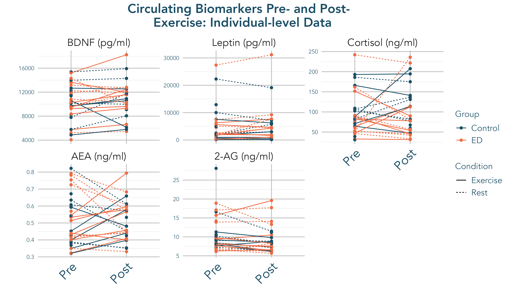
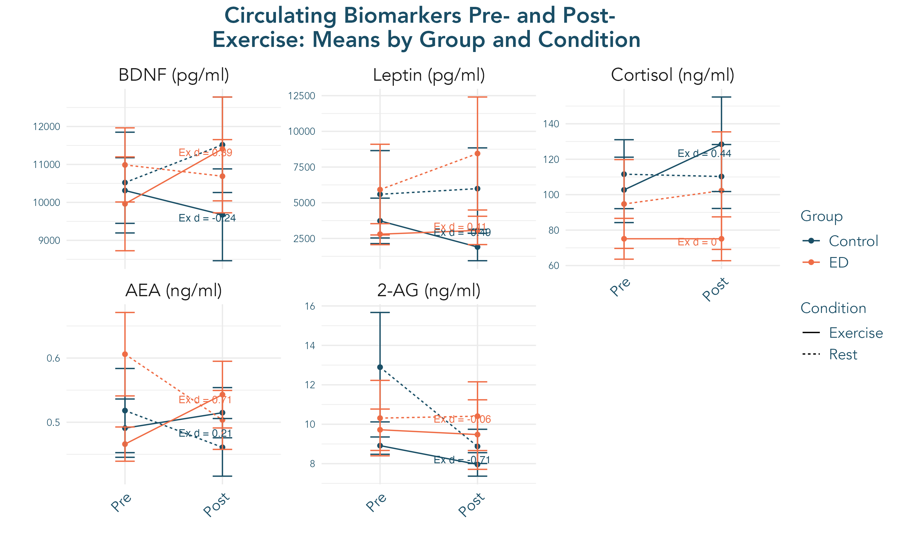
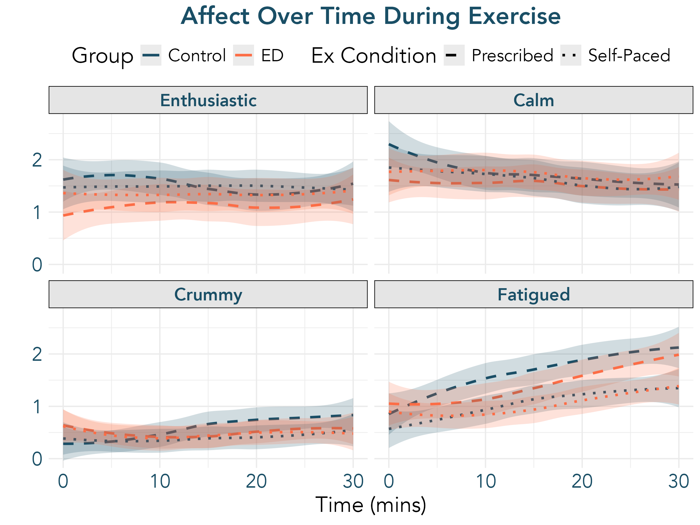
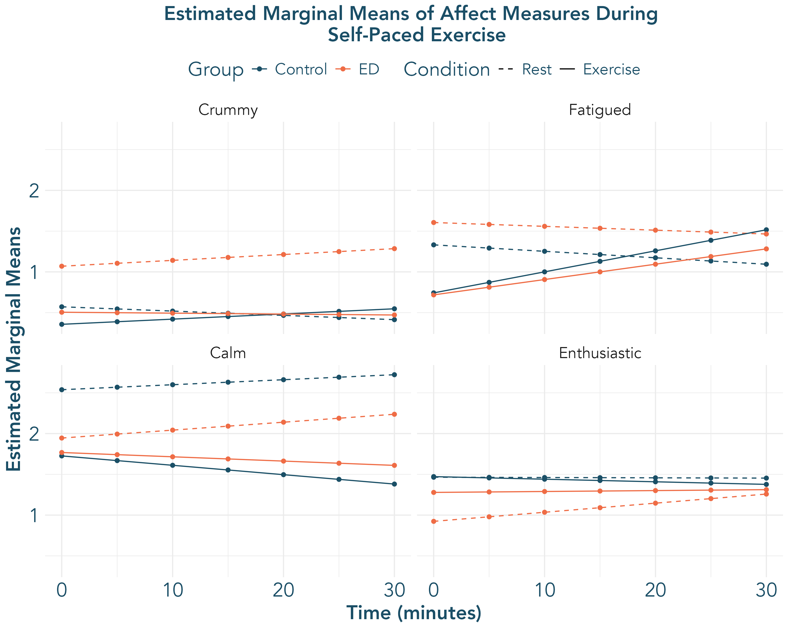
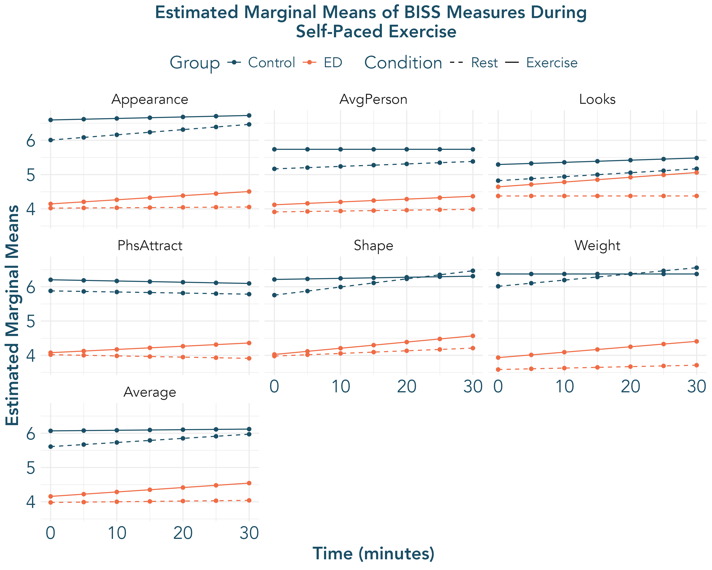

MAXED Registered Report Results
Results
Preliminary Analysis
We will provide sample descriptive statistics for both ED and HC groups on variables of interest (e.g., age, ED diagnosis, BMI, compulsive exercise, Eating Disorder Examination subscales). Comparison of affect ratings before and after milkshake ingestion will also serve as a manipulation check to clarify the degree to which negative affect (specifically anxiety) increased as a result of this challenge.
Aim 1: Feasiblity
We will confirm feasibility of our exercise-based tasks via a) study dropout at all timepoints, b) adverse events, c) completion rates of exercise task on Day B, d) completion rates of milkshake task across ED and HC participants. Over the course of the study, we expect both ED and HC groups to meet thresholds of < 20% dropout, zero adverse events, and > 80% task completion.
Aim 2: Variability in Exercise Response
We will characterize changes during exercise in state body image, mood, and biological markers in both ED and HC groups; we will specifically characterize mean levels of, and variability in, biobehavioral response to exercise across the ED and HC groups. We will evaluate exercise-induced changes in DA, 5-HT, BDNF, leptin, and eCB biomarkers for the Prescribed Exercise Task. Shifts in affect, body image, and biomarkers will be evaluated descriptively with measures of central tendency, skew, and variance. We will further characterize shifts in affect and body image through linear mixed effect models.
Specific models tested are noted in Table 1.
| Model Name | Parameters |
|---|---|
| Overall Model: Affect and Body Image Variables | DV ~ 1 + Age + Group + Time + BMI*Condition + Time*Condition + Time*Group*Condition + (1+Time | Condition: Participant) |
| Within ED: Affect and Body Image Variables | DV ~ 1 + Age + Time + BMI*Condition + Time*Condition + Time*Condition + (1+Time | Condition: Participant) |
| Overall Biomarker Model | Biomarker ~ 1 + Age + Group + Time + BMI*Condition + Time*Condition + (1 + Time | Condition: Participant) |
| Within ED: Biomarkers | Biomarker ~ 1 + Age + Time + BMI*Condition + Time*Condition + (1 + Time | Condition: Participant) |
Heterogeneity of Variance across Groups in Exercise Response (using |
DV ~ 1 + Age + Group + Time + Time x Group, random = list(id = pdDiag(form = ~ Group)), weights = varIdent(form = ~ 1 | Group) |
We estimated change over time using descriptives, and also ran overall and within ED models using the lme4 package. To evaluate heterogeneity of variance, we incorporated a random effect of group into a model with age, time, group, and group x time fixed effects. We then compared model fit of this model to the model without a random effect of group. To examine potential heterogeneity of within person, a level-1 random effect was then incorporated into the model and compared against a model with between-person (level 2) random effects only.
Affect
Descriptives
Affective change across group and condition are presented in Figure 1 (Panel A). Visual depiction of raw changes in affect measurements during exercise across groups is presented in Supplemental Figure 4 along with variance in affect across group and condition. Specific values for average levels of change across groups (30 min vs. BL), maximum increases and maximum decreases from baseline, and variance are presented in Supplemental Table 2. Patterns of results indicate that individuals in the ED group consistently feel more positive and less negative emotion increases across the 30 mins of exercise. Fatigue increases in the ED group may be delayed, relative to HC (see Panel A).

Overall Model
Model fit indices for each variable and task are presented in Supplemental Table 4.
Marginal \(R^2\) values indicate that fixed effects specified in the current models are, together, accounting for 4-19% of variance in affect during the course of the task, depending on task and variable. Results from each variable in the overall model (see Table 1) are presented in Supplemental Table 3 with estimated marginal means for each timepoint presented in Supplemental Figure 5. Significant Time x Condition interactions indicate that, across both ED and Control groups, participants tended to feel increased fatigue and reduced calmness during exercise, relative to rest.
As noted, the current pilot trial was not sufficiently powered to detect small-to-moderate three-way interactions. One Group x Time x Condition emerged at nominal level of significance (p < 0.05) - feeling Crummy in the Self-Paced Task. The ED group exhibited higher negative affect (feeling crummy) in the Rest condition of the Self-Paced Task (i.e. when asked to ingest a milkshake and then rest), which may to be mitigated by the opportunity to exercise (see Supplemental Figure 5). While not detected in this pilot sample, there is aalso possible trend toward increased enthusiasm in the ED group in the Prescribed Task, relative to a decrease in enthusiasm in the control group.
Evaluations of the between and within subject variance across groups via introducing additional random effects and comparing nested models indicated potentially higher within subject variance in fatigue and calmenss during the Prescribed Task and enthusiasm and crumminess during the Self-Paced Task among the ED group, relative to the HC group (see Supplemental Table 5).
Within ED Group Model
Model fit indices for each variable and task are presented in Supplmental Table 4. Marginal \(R^2\) values indicate that fixed effects specified in the current models are, together, accounting for 5-22% of variance in affect during the course of the task, depending on task and variable. Results within the ED group are presented in Supplemental Table 6. A Time x Condition effect emerged for calmness during the Prescribed Task and fatigue during the Self-Paced Task. Individuals with EDs reported feeling less calm and more fatigued over time during exercise vs. rest. Further, older age was associated with feeling less crummy during both tasks and less Fatigued during the Prescribed task. There were no BMI or BMI x Condition effects, indicating limited impact of BMI on affect during exercise among the ED group.
Body Image
Descriptives
Average levels of change from 0 to 30 minutes is presented in Figure 1 (Panel B). Visual depiction of raw changes in body image changes during exercise across groups is presented in Supplemental Figure 6, along with variance in body image across groups are presented. All specific values for average levels of change across groups (30 min vs. BL), maximum increases and maximum decreases from baseline, and variance are presented in Supplemental Table 7. Patterns of results indicate that individuals in the ED group consistently feel worse about their bodies, although exercise does have some impact on body image. In all measures, the ED group had greater improvements in body image during exercise, as compared to controls. Change indicators suggest (ED vs. HC Cohen’s d > .2) that individuals with EDs specifically feel better about their weight, looks, and appearance, as well as feeling better on average and feeling better than the average person after self-paced exercise and better about their weight after prescribed exercise.
Overall Model
Model fit indices for each variable and task are presented in Supplmental Table 10. Marginal \(R^2\) values indicate that fixed effects specified in the current models are, together, accounting for 6-39% of variance in body image during exercise across variable and task. Results from each variable in the overall model (see Table 1) are presented in Supplemental Table 8 with estimated marginal means for each timepoint presented in Figure 7. Group was a significant predictor of all body image items – with the HC group feeling better about their body, relative to the ED group. Higher BMI was associated with feeling less attractive than the average person, but there were no significant BMI x Condition effects, indicating that exercise did not influence this effect. There was an overall time effect several items during the Self-Paced Task, with individuals generally feeling better over time. There was also a Group x Time interaction for the BISS average and Weight during the Prescribe Task, such that individuals in the ED group had greater increases in average BISS scores along with feelings about their Weight relative to controls. Two Time x Condition x Group interactions emerged. Coupled with an interpretation of marginal means (Supplemental Figure 7) , these interactions indicate that the ED group had more positive increases in feelings about their weight and overall body image during self-paced exercise, relative to the HC group. Evaluations of variance across the two groups also indicates more within person variance in the ED group, as compared to the HC group, on most BISS measurements during exercise (see Supplemental Table 11).
Within ED Group Model
Model fit indices for each variable and task within the ED group are presented in Supplmental Table 10. Marginal \(R^2\) values indicate that fixed effects specified in the current models are, together, accounting for 4-15% of variance in body image during exercise across variable and task. Results for each model within the ED group are presented in Supplemental Table 9. A Time effect emerged for Weight and Appearance in the Prescribed Task – individuals felt better about these aspects of body image as the task progressed, regardless of condition (Exercise vs. Rest).
Biomarker Response
Descriptives
A visual depiction of biomarker response – at both individual and group-aggregate levels – is presented in Figure 2 (Panels A-B), along with differences between ED and Control on Pre, Post- Raw Change (Post-Pre) and residualized change scores in biomarkers post-exercise (Panels C-D).




Overall Model
Full t-test results across both exercise and rest conditions along with tests of heterogeneity of variance in exercise condition response across the ED and Control group using each outcome approach are presented in Supplementary Table 12.
Within ED Group Model
Full t-test results across both exercise and rest conditions using each outcome approach are presented in Supplementary Table 13. # KS NOTE: Not putting any text here yet to explain graphs since we’ll have more biomarker data incoming ##
Aim 3: Exercise Response Correlations
Within the ED group, we will calculate correlations between acute exercise parameters/response and ED-related measures. We will conduct a linear regression to obtain slope estimates for affect and body image shifts for each individual, within exercise condition. We will also conduct a linear regression estimating post-biomarker scores across all individuals with EDs in the exercise condition, saving residuals.
We will quantify Pearson correlations with 95% confidence intervals between these slope estimates, biomarker residuals, Self-Paced Task exercise parameters (e.g., average bike speed, HR), functions of exercise subscales, self-report of compulsive exercise, and EDE global scores. We will estimate Pearson correlations and 95% confidence intervals for these correlations.
Exercise Response
Correlations between acute exercise response variables are presented in Supplemental Figure 8, and full correlation data with 95% CIs is presented in Supplemental Table 14. Average zero-order \(r^2\) between exercise response variables in the control group is 0.14 and in the ED group is 0.19, indicating slightly stronger association between exercise response variables in the ED group, relative to the control group, with little evidence of collinearity across exercise response measures – indicating an independence and potential unique utility of exercise response measures across the three domains of assessment.
Correlations with Additional Variables
Correlations between body image response to exercise with key variables of interest are presented in Figure 3. Full correlation data with 95% CIs is presented in Table 15. Average zero-order \(r^2\) between acute exercise response and key variables of interest in the control group is 0.08 and in the ED group is 0.1. For only those in the ED group only, greater body image response to acute exercise was associated with key variables, including higher self-reported drive for muscularity, higher social negative reinforcement, lower social positive reinforcement, lower body mass index, and lower weight suppression. More improvement in feelings about Shape during exercise were negatively associated with EDE global scores for controls. Increases in feeling crummy during Prescribed exercise were associated with higher BMI and lower MVPA in the control group only, and higher social positive reinforcement for exercise in both groups. Increases in feeling Crummy during self paced exercise were negatively associated with exercise intensity and accelerometer-measured LPA for both groups, while feeling enthusiastic during Self-Paced exercise was positively associated with exercise intensity for only the ED group. For the control group, but not the ED group, feeling crummy during self paced exercise was associated with higher BMI and lower weight suppression. Perceived Exertion during prescribed exercise was associated with higher drive for muscularity only for the ED group. While not reaching statistical significance in this pilot sample, there is also an indication of more positive body image change in both the Prescribed and Self-Paced tasks correlating with higher chosen intensity of self-paced exercise in the ED, but not control group.
Supplement
All supplemental tables are available in the Supplemental Tables Excel Workbook. Supplemental tables and figures are also presented below
Affect

| Variable | Change Indicator | task | Mean (ED) | Mean (Control) | SD (ED) | SD (Control) | Cohen's d | F (Levene's) | df | Levenes p-value |
|---|---|---|---|---|---|---|---|---|---|---|
| Enthusiastic | variance | Prescribed | 0.21 | 0.26 | 0.27 | 0.24 | -0.19 | 0.08 | 71 | 0.78 |
| Enthusiastic | 30 min vs. BL | Prescribed | 0.06 | -0.26 | 1.04 | 1.07 | 0.30 | 0.93 | 71 | 0.34 |
| Enthusiastic | Max - BL | Prescribed | 0.47 | 0.41 | 0.79 | 0.59 | 0.09 | 0.14 | 71 | 0.71 |
| Enthusiastic | BL - Min | Prescribed | 0.35 | 0.67 | 0.65 | 0.74 | -0.45 | 2.87 | 71 | 0.09 |
| Enthusiastic | variance | SelfPaced | 0.16 | 0.16 | 0.20 | 0.17 | 0.04 | 0.81 | 71 | 0.37 |
| Enthusiastic | 30 min vs. BL | SelfPaced | -0.09 | 0.03 | 0.70 | 0.79 | -0.15 | 0.02 | 71 | 0.89 |
| Enthusiastic | Max - BL | SelfPaced | 0.26 | 0.39 | 0.44 | 0.59 | -0.26 | 1.24 | 71 | 0.27 |
| Enthusiastic | BL - Min | SelfPaced | 0.46 | 0.32 | 0.70 | 0.53 | 0.23 | 0.96 | 71 | 0.33 |
| Crummy | variance | Prescribed | 0.18 | 0.23 | 0.21 | 0.34 | -0.19 | 1.19 | 63 | 0.28 |
| Crummy | 30 min vs. BL | Prescribed | -0.09 | 0.31 | 0.88 | 0.93 | -0.45 | 0.01 | 63 | 0.94 |
| Crummy | Max - BL | Prescribed | 0.42 | 0.59 | 0.61 | 0.84 | -0.23 | 0.87 | 63 | 0.35 |
| Crummy | BL - Min | Prescribed | 0.36 | 0.22 | 0.60 | 0.49 | 0.26 | 1.12 | 63 | 0.29 |
| Crummy | variance | SelfPaced | 0.19 | 0.17 | 0.22 | 0.29 | 0.08 | 0.01 | 62 | 0.92 |
| Crummy | 30 min vs. BL | SelfPaced | 0.03 | 0.03 | 0.72 | 0.67 | -0.01 | 0.95 | 62 | 0.33 |
| Crummy | Max - BL | SelfPaced | 0.44 | 0.33 | 0.66 | 0.80 | 0.15 | 0.35 | 62 | 0.56 |
| Crummy | BL - Min | SelfPaced | 0.32 | 0.27 | 0.53 | 0.45 | 0.11 | 0.21 | 62 | 0.65 |
| Fatigued | variance | Prescribed | 0.45 | 0.37 | 0.60 | 0.37 | 0.16 | 1.29 | 74 | 0.26 |
| Fatigued | 30 min vs. BL | Prescribed | 0.68 | 0.77 | 1.40 | 1.27 | -0.07 | 0.25 | 74 | 0.62 |
| Fatigued | Max - BL | Prescribed | 0.97 | 1.05 | 1.14 | 1.02 | -0.07 | 0.61 | 74 | 0.44 |
| Fatigued | BL - Min | Prescribed | 0.30 | 0.26 | 0.57 | 0.44 | 0.08 | 0.12 | 74 | 0.73 |
| Fatigued | variance | SelfPaced | 0.24 | 0.32 | 0.28 | 0.42 | -0.25 | 0.06 | 69 | 0.81 |
| Fatigued | 30 min vs. BL | SelfPaced | 0.11 | 0.00 | 0.91 | 1.30 | 0.10 | 2.18 | 69 | 0.14 |
| Fatigued | Max - BL | SelfPaced | 0.57 | 0.59 | 0.83 | 0.74 | -0.03 | 0.01 | 69 | 0.91 |
| Fatigued | BL - Min | SelfPaced | 0.38 | 0.50 | 0.59 | 0.93 | -0.16 | 0.44 | 69 | 0.51 |
| Calm | variance | Prescribed | 0.27 | 0.31 | 0.27 | 0.37 | -0.12 | 0.16 | 75 | 0.69 |
| Calm | 30 min vs. BL | Prescribed | 0.13 | -0.33 | 1.02 | 1.03 | 0.45 | 0.04 | 75 | 0.85 |
| Calm | Max - BL | Prescribed | 0.53 | 0.38 | 0.80 | 0.54 | 0.21 | 0.84 | 75 | 0.36 |
| Calm | BL - Min | Prescribed | 0.47 | 0.77 | 0.69 | 0.81 | -0.39 | 1.42 | 75 | 0.24 |
| Calm | variance | SelfPaced | 0.23 | 0.25 | 0.21 | 0.39 | -0.04 | 0.98 | 72 | 0.33 |
| Calm | 30 min vs. BL | SelfPaced | 0.14 | -0.03 | 0.92 | 0.90 | 0.18 | 0.12 | 72 | 0.74 |
| Calm | Max - BL | SelfPaced | 0.51 | 0.41 | 0.69 | 0.64 | 0.16 | 0.48 | 72 | 0.49 |
| Calm | BL - Min | SelfPaced | 0.46 | 0.46 | 0.61 | 0.69 | 0.00 | 0.00 | 72 | 1.00 |
| Percieved Exertion | variance | Prescribed | 6.68 | 7.17 | 4.77 | 4.75 | -0.10 | 0.01 | 38 | 0.93 |
| Percieved Exertion | 30 min vs. BL | Prescribed | 6.15 | 5.95 | 3.05 | 2.87 | 0.07 | 0.03 | 38 | 0.85 |
| Percieved Exertion | Max - BL | Prescribed | 6.60 | 6.90 | 2.70 | 2.49 | -0.12 | 0.39 | 38 | 0.54 |
| Percieved Exertion | BL - Min | Prescribed | 0.00 | 0.00 | 0.00 | 0.00 | NaN | NaN | 38 | NaN |
| Percieved Exertion | variance | SelfPaced | 3.90 | 3.22 | 5.99 | 3.39 | 0.14 | 0.11 | 37 | 0.74 |
| Percieved Exertion | 30 min vs. BL | SelfPaced | 3.32 | 3.60 | 2.71 | 2.68 | -0.11 | 0.01 | 37 | 0.94 |
| Percieved Exertion | Max - BL | SelfPaced | 4.37 | 4.25 | 2.73 | 2.77 | 0.04 | 0.14 | 37 | 0.71 |
| Percieved Exertion | BL - Min | SelfPaced | 0.11 | 0.00 | 0.46 | 0.00 | 0.33 | 1.05 | 37 | 0.31 |
Note. Rows with Cohen’s d > .2 (or < -.2) bolded to indicate potential differences between ED and HC on measures of exercise response variability.
| variable | task | term | Estimate | Std. Error | df | t value | Pr(>|t|) |
|---|---|---|---|---|---|---|---|
| Crummy | Prescribed | Intercept | 0.525 | 0.167 | 66 | 3.147 | 0.002 |
| Crummy | Prescribed | Age | -0.286 | 0.079 | 69 | -3.623 | 5.53e-04 |
| Crummy | Prescribed | Group | 0.053 | 0.232 | 67 | 0.228 | 0.820 |
| Crummy | Prescribed | Time | 0.002 | 0.006 | 71 | 0.285 | 0.777 |
| Crummy | Prescribed | BMI | 0.136 | 0.105 | 69 | 1.292 | 0.200 |
| Crummy | Prescribed | Condition | -0.199 | 0.235 | 66 | -0.846 | 0.400 |
| Crummy | Prescribed | BMI x Condition | 0.113 | 0.144 | 69 | 0.783 | 0.436 |
| Crummy | Prescribed | Time x Condition | 0.021 | 0.008 | 71 | 2.668 | 0.009 |
| Crummy | Prescribed | Group x Time | -0.005 | 0.008 | 72 | -0.669 | 0.506 |
| Crummy | Prescribed | Group x Condition | 0.102 | 0.326 | 67 | 0.313 | 0.755 |
| Crummy | Prescribed | Group x Time x Condition | -0.016 | 0.011 | 72 | -1.495 | 0.139 |
| Crummy | SelfPaced | Intercept | 0.571 | 0.189 | 67 | 3.018 | 0.004 |
| Crummy | SelfPaced | Age | -0.132 | 0.093 | 67 | -1.415 | 0.162 |
| Crummy | SelfPaced | Group | 0.498 | 0.267 | 67 | 1.865 | 0.067 |
| Crummy | SelfPaced | Time | -0.005 | 0.005 | 70 | -1.118 | 0.267 |
| Crummy | SelfPaced | BMI | 0.086 | 0.126 | 67 | 0.686 | 0.495 |
| Crummy | SelfPaced | Condition | -0.216 | 0.266 | 66 | -0.810 | 0.421 |
| Crummy | SelfPaced | BMI x Condition | 0.103 | 0.173 | 67 | 0.598 | 0.552 |
| Crummy | SelfPaced | Time x Condition | 0.012 | 0.007 | 70 | 1.751 | 0.084 |
| Crummy | SelfPaced | Group x Time | 0.012 | 0.007 | 70 | 1.896 | 0.062 |
| Crummy | SelfPaced | Group x Condition | -0.350 | 0.374 | 66 | -0.934 | 0.354 |
| Crummy | SelfPaced | Group x Time x Condition | -0.020 | 0.009 | 70 | -2.153 | 0.035 |
| Calm | Prescribed | Intercept | 2.135 | 0.231 | 70 | 9.229 | 1.06e-13 |
| Calm | Prescribed | Age | -0.126 | 0.113 | 69 | -1.112 | 0.270 |
| Calm | Prescribed | Group | -0.112 | 0.322 | 70 | -0.347 | 0.729 |
| Calm | Prescribed | Time | 0.001 | 0.007 | 71 | 0.159 | 0.874 |
| Calm | Prescribed | BMI | -0.035 | 0.151 | 70 | -0.234 | 0.815 |
| Calm | Prescribed | Condition | -0.081 | 0.326 | 70 | -0.247 | 0.806 |
| Calm | Prescribed | BMI x Condition | -0.029 | 0.207 | 69 | -0.139 | 0.890 |
| Calm | Prescribed | Time x Condition | -0.022 | 0.011 | 71 | -2.062 | 0.043 |
| Calm | Prescribed | Group x Time | 0.015 | 0.010 | 72 | 1.438 | 0.155 |
| Calm | Prescribed | Group x Condition | -0.370 | 0.452 | 70 | -0.819 | 0.415 |
| Calm | Prescribed | Group x Time x Condition | -0.000 | 0.015 | 72 | -0.007 | 0.994 |
| Calm | SelfPaced | Intercept | 2.537 | 0.237 | 67 | 10.718 | 3.38e-16 |
| Calm | SelfPaced | Age | -0.230 | 0.120 | 67 | -1.919 | 0.059 |
| Calm | SelfPaced | Group | -0.593 | 0.334 | 68 | -1.775 | 0.080 |
| Calm | SelfPaced | Time | 0.006 | 0.006 | 71 | 0.998 | 0.322 |
| Calm | SelfPaced | BMI | 0.100 | 0.161 | 67 | 0.617 | 0.539 |
| Calm | SelfPaced | Condition | -0.812 | 0.333 | 67 | -2.438 | 0.017 |
| Calm | SelfPaced | BMI x Condition | 0.041 | 0.221 | 67 | 0.185 | 0.854 |
| Calm | SelfPaced | Time x Condition | -0.018 | 0.009 | 70 | -2.034 | 0.046 |
| Calm | SelfPaced | Group x Time | 0.004 | 0.009 | 71 | 0.418 | 0.677 |
| Calm | SelfPaced | Group x Condition | 0.635 | 0.469 | 67 | 1.354 | 0.180 |
| Calm | SelfPaced | Group x Time x Condition | 0.003 | 0.012 | 70 | 0.219 | 0.827 |
| Enthusiastic | Prescribed | Intercept | 1.252 | 0.246 | 69 | 5.096 | 2.92e-06 |
| Enthusiastic | Prescribed | Age | -0.103 | 0.123 | 69 | -0.840 | 0.404 |
| Enthusiastic | Prescribed | Group | -0.370 | 0.342 | 69 | -1.082 | 0.283 |
| Enthusiastic | Prescribed | Time | -0.009 | 0.007 | 71 | -1.280 | 0.205 |
| Enthusiastic | Prescribed | BMI | -0.018 | 0.164 | 69 | -0.107 | 0.915 |
| Enthusiastic | Prescribed | Condition | 0.424 | 0.346 | 69 | 1.224 | 0.225 |
| Enthusiastic | Prescribed | BMI x Condition | -0.176 | 0.224 | 69 | -0.786 | 0.434 |
| Enthusiastic | Prescribed | Time x Condition | -0.000 | 0.010 | 71 | -0.041 | 0.967 |
| Enthusiastic | Prescribed | Group x Time | 0.002 | 0.010 | 72 | 0.246 | 0.807 |
| Enthusiastic | Prescribed | Group x Condition | -0.331 | 0.480 | 69 | -0.689 | 0.493 |
| Enthusiastic | Prescribed | Group x Time x Condition | 0.013 | 0.013 | 71 | 0.961 | 0.340 |
| Enthusiastic | SelfPaced | Intercept | 1.465 | 0.257 | 67 | 5.699 | 2.94e-07 |
| Enthusiastic | SelfPaced | Age | -0.051 | 0.123 | 67 | -0.412 | 0.682 |
| Enthusiastic | SelfPaced | Group | -0.541 | 0.362 | 68 | -1.493 | 0.140 |
| Enthusiastic | SelfPaced | Time | -0.000 | 0.009 | 57 | -0.042 | 0.967 |
| Enthusiastic | SelfPaced | BMI | -0.073 | 0.166 | 67 | -0.441 | 0.660 |
| Enthusiastic | SelfPaced | Condition | 0.008 | 0.362 | 67 | 0.023 | 0.981 |
| Enthusiastic | SelfPaced | BMI x Condition | -0.131 | 0.227 | 67 | -0.576 | 0.566 |
| Enthusiastic | SelfPaced | Time x Condition | -0.003 | 0.012 | 57 | -0.228 | 0.820 |
| Enthusiastic | SelfPaced | Group x Time | 0.012 | 0.012 | 57 | 0.946 | 0.348 |
| Enthusiastic | SelfPaced | Group x Condition | 0.347 | 0.509 | 67 | 0.683 | 0.497 |
| Enthusiastic | SelfPaced | Group x Time x Condition | -0.007 | 0.017 | 57 | -0.420 | 0.676 |
| Fatigued | Prescribed | Intercept | 1.067 | 0.209 | 68 | 5.092 | 2.98e-06 |
| Fatigued | Prescribed | Age | -0.286 | 0.099 | 67 | -2.884 | 0.005 |
| Fatigued | Prescribed | Group | 0.170 | 0.291 | 69 | 0.585 | 0.561 |
| Fatigued | Prescribed | Time | 0.010 | 0.009 | 70 | 1.105 | 0.273 |
| Fatigued | Prescribed | BMI | -0.041 | 0.133 | 68 | -0.307 | 0.760 |
| Fatigued | Prescribed | Condition | 0.000 | 0.295 | 68 | 0.000 | 1.000 |
| Fatigued | Prescribed | BMI x Condition | 0.336 | 0.182 | 68 | 1.852 | 0.068 |
| Fatigued | Prescribed | Time x Condition | 0.033 | 0.013 | 70 | 2.525 | 0.014 |
| Fatigued | Prescribed | Group x Time | -0.004 | 0.013 | 71 | -0.285 | 0.777 |
| Fatigued | Prescribed | Group x Condition | -0.343 | 0.409 | 69 | -0.838 | 0.405 |
| Fatigued | Prescribed | Group x Time x Condition | -0.006 | 0.018 | 70 | -0.329 | 0.743 |
| Fatigued | SelfPaced | Intercept | 1.330 | 0.192 | 68 | 6.944 | 1.80e-09 |
| Fatigued | SelfPaced | Age | -0.274 | 0.096 | 67 | -2.841 | 0.006 |
| Fatigued | SelfPaced | Group | 0.274 | 0.270 | 68 | 1.013 | 0.315 |
| Fatigued | SelfPaced | Time | -0.008 | 0.006 | 71 | -1.264 | 0.210 |
| Fatigued | SelfPaced | BMI | 0.098 | 0.130 | 67 | 0.751 | 0.455 |
| Fatigued | SelfPaced | Condition | -0.589 | 0.270 | 67 | -2.186 | 0.032 |
| Fatigued | SelfPaced | BMI x Condition | 0.026 | 0.178 | 67 | 0.144 | 0.886 |
| Fatigued | SelfPaced | Time x Condition | 0.034 | 0.009 | 70 | 3.812 | 2.93e-04 |
| Fatigued | SelfPaced | Group x Time | 0.003 | 0.009 | 71 | 0.370 | 0.713 |
| Fatigued | SelfPaced | Group x Condition | -0.298 | 0.379 | 68 | -0.787 | 0.434 |
| Fatigued | SelfPaced | Group x Time x Condition | -0.010 | 0.012 | 70 | -0.829 | 0.410 |
Note. Rest Condition and Control Group set as reference, ED and Exercise set as Comparison. Positive effects represent higher scores for ED Group and Exercise Condition.
| Model | Variable | Task | R2.Marginal | R2.Conditional | AIC | BIC |
|---|---|---|---|---|---|---|
| Overall | Crummy | Prescribed | 0.15 | 0.81 | 768.40 | 832.35 |
| Overall | Crummy | SelfPaced | 0.16 | 0.84 | 793.84 | 857.53 |
| Overall | Calm | Prescribed | 0.12 | 0.85 | 1014.90 | 1078.86 |
| Overall | Calm | SelfPaced | 0.16 | 0.86 | 989.49 | 1053.16 |
| Overall | Enthusiastic | Prescribed | 0.08 | 0.90 | 897.07 | 961.02 |
| Overall | Enthusiastic | SelfPaced | 0.04 | 0.82 | 1134.09 | 1197.78 |
| Overall | Fatigued | Prescribed | 0.19 | 0.86 | 983.13 | 1047.08 |
| Overall | Fatigued | SelfPaced | 0.14 | 0.81 | 970.79 | 1034.49 |
| ED | Crummy | Prescribed | 0.22 | 0.80 | 393.68 | 433.39 |
| ED | Crummy | SelfPaced | 0.22 | 0.85 | 444.02 | 483.39 |
| ED | Calm | Prescribed | 0.18 | 0.85 | 508.84 | 548.55 |
| ED | Calm | SelfPaced | 0.05 | 0.85 | 504.96 | 544.29 |
| ED | Enthusiastic | Prescribed | 0.17 | 0.91 | 418.77 | 458.47 |
| ED | Enthusiastic | SelfPaced | 0.09 | 0.77 | 667.72 | 707.10 |
| ED | Fatigued | Prescribed | 0.15 | 0.86 | 529.08 | 568.78 |
| ED | Fatigued | SelfPaced | 0.15 | 0.82 | 498.76 | 538.13 |

| Task | Variable | Model | df | AIC | BIC | logLik | Test | L.Ratio | p-value | Between_Variance_Control | Between_Variance_ED | Within_Variance_Control | Within_Variance_ED |
|---|---|---|---|---|---|---|---|---|---|---|---|---|---|
| Prescribed | Crummy | Null | 7.00 | 451.36 | 476.31 | -218.68 | NA | NA | NA | NA | NA | NA | NA |
| Prescribed | Crummy | Between | 8.00 | 453.36 | 481.87 | -218.68 | Null vs Between | 0.00 | 1.00 | NA | NA | NA | NA |
| Prescribed | Crummy | Between + Within | 9.00 | 452.58 | 484.66 | -217.29 | Between vs Full | 2.78 | 0.10 | 0.35 | 0.35 | 0.22 | 0.16 |
| Prescribed | Calm | Null | 7.00 | 551.26 | 576.21 | -268.63 | NA | NA | NA | NA | NA | NA | NA |
| Prescribed | Calm | Between | 8.00 | 553.24 | 581.76 | -268.62 | Null vs Between | 0.02 | 0.90 | NA | NA | NA | NA |
| Prescribed | Calm | Between + Within | 9.00 | 547.14 | 579.22 | -264.57 | Between vs Full | 8.10 | 0.00 | 0.81 | 0.88 | 0.33 | 0.20 |
| Prescribed | Enthusiastic | Null | 7.00 | 528.37 | 553.32 | -257.19 | NA | NA | NA | NA | NA | NA | NA |
| Prescribed | Enthusiastic | Between | 8.00 | 530.30 | 558.82 | -257.15 | Null vs Between | 0.07 | 0.79 | NA | NA | NA | NA |
| Prescribed | Enthusiastic | Between + Within | 9.00 | 530.70 | 562.78 | -256.35 | Between vs Full | 1.60 | 0.21 | 0.85 | 0.99 | 0.26 | 0.21 |
| Prescribed | Fatigued | Null | 7.00 | 604.33 | 629.29 | -295.17 | NA | NA | NA | NA | NA | NA | NA |
| Prescribed | Fatigued | Between | 8.00 | 606.30 | 634.81 | -295.15 | Null vs Between | 0.04 | 0.85 | NA | NA | NA | NA |
| Prescribed | Fatigued | Between + Within | 9.00 | 599.06 | 631.14 | -290.53 | Between vs Full | 9.24 | 0.00 | 0.54 | 0.56 | 0.25 | 0.44 |
| SelfPaced | Crummy | Null | 7.00 | 359.62 | 384.38 | -172.81 | NA | NA | NA | NA | NA | NA | NA |
| SelfPaced | Crummy | Between | 8.00 | 361.62 | 389.92 | -172.81 | Null vs Between | 0.00 | 1.00 | NA | NA | NA | NA |
| SelfPaced | Crummy | Between + Within | 9.00 | 360.72 | 392.56 | -171.36 | Between vs Full | 2.90 | 0.09 | 0.44 | 0.44 | 0.11 | 0.15 |
| SelfPaced | Calm | Null | 7.00 | 418.19 | 442.92 | -202.10 | NA | NA | NA | NA | NA | NA | NA |
| SelfPaced | Calm | Between | 8.00 | 420.19 | 448.46 | -202.10 | Null vs Between | 0.00 | 1.00 | NA | NA | NA | NA |
| SelfPaced | Calm | Between + Within | 9.00 | 420.30 | 452.10 | -201.15 | Between vs Full | 1.89 | 0.17 | 1.04 | 1.04 | 0.13 | 0.17 |
| SelfPaced | Enthusiastic | Null | 7.00 | 387.22 | 411.98 | -186.61 | NA | NA | NA | NA | NA | NA | NA |
| SelfPaced | Enthusiastic | Between | 8.00 | 389.22 | 417.51 | -186.61 | Null vs Between | 0.00 | 1.00 | NA | NA | NA | NA |
| SelfPaced | Enthusiastic | Between + Within | 9.00 | 387.01 | 418.84 | -184.50 | Between vs Full | 4.21 | 0.04 | 0.87 | 0.87 | 0.11 | 0.16 |
| SelfPaced | Fatigued | Null | 7.00 | 460.56 | 485.32 | -223.28 | NA | NA | NA | NA | NA | NA | NA |
| SelfPaced | Fatigued | Between | 8.00 | 462.56 | 490.86 | -223.28 | Null vs Between | 0.00 | 1.00 | NA | NA | NA | NA |
| SelfPaced | Fatigued | Between + Within | 9.00 | 458.41 | 490.25 | -220.20 | Between vs Full | 6.15 | 0.01 | 0.51 | 0.51 | 0.15 | 0.24 |
| variable | task | term | Estimate | Std. Error | df | t value | Pr(>|t|) |
|---|---|---|---|---|---|---|---|
| Crummy | Prescribed | Intercept | 0.558 | 0.148 | 35 | 3.763 | 6.11e-04 |
| Crummy | Prescribed | Age | -0.400 | 0.106 | 35 | -3.759 | 6.31e-04 |
| Crummy | Prescribed | Time | -0.004 | 0.005 | 38 | -0.761 | 4.52e-01 |
| Crummy | Prescribed | BMI | 0.151 | 0.142 | 35 | 1.066 | 2.94e-01 |
| Crummy | Prescribed | Condition | -0.093 | 0.208 | 35 | -0.446 | 6.58e-01 |
| Crummy | Prescribed | BMI x Condition | 0.151 | 0.178 | 35 | 0.848 | 4.02e-01 |
| Crummy | Prescribed | Time x Condition | 0.005 | 0.007 | 38 | 0.704 | 4.86e-01 |
| Crummy | SelfPaced | Intercept | 1.072 | 0.193 | 33 | 5.563 | 3.40e-06 |
| Crummy | SelfPaced | Age | -0.321 | 0.145 | 33 | -2.204 | 3.46e-02 |
| Crummy | SelfPaced | Time | 0.007 | 0.005 | 36 | 1.536 | 1.33e-01 |
| Crummy | SelfPaced | BMI | 0.329 | 0.196 | 33 | 1.680 | 1.03e-01 |
| Crummy | SelfPaced | Condition | -0.605 | 0.271 | 33 | -2.231 | 3.25e-02 |
| Crummy | SelfPaced | BMI x Condition | -0.109 | 0.247 | 33 | -0.442 | 6.61e-01 |
| Crummy | SelfPaced | Time x Condition | -0.008 | 0.007 | 35 | -1.262 | 2.15e-01 |
| Calm | Prescribed | Intercept | 2.045 | 0.207 | 36 | 9.891 | 8.30e-12 |
| Calm | Prescribed | Age | 0.050 | 0.151 | 35 | 0.330 | 7.43e-01 |
| Calm | Prescribed | Time | 0.016 | 0.007 | 38 | 2.246 | 3.05e-02 |
| Calm | Prescribed | BMI | -0.140 | 0.200 | 36 | -0.700 | 4.89e-01 |
| Calm | Prescribed | Condition | -0.455 | 0.291 | 36 | -1.566 | 1.26e-01 |
| Calm | Prescribed | BMI x Condition | -0.063 | 0.252 | 35 | -0.249 | 8.05e-01 |
| Calm | Prescribed | Time x Condition | -0.022 | 0.010 | 38 | -2.176 | 3.59e-02 |
| Calm | SelfPaced | Intercept | 1.958 | 0.214 | 33 | 9.154 | 1.30e-10 |
| Calm | SelfPaced | Age | -0.001 | 0.167 | 33 | -0.007 | 9.95e-01 |
| Calm | SelfPaced | Time | 0.010 | 0.006 | 36 | 1.498 | 1.43e-01 |
| Calm | SelfPaced | BMI | -0.110 | 0.225 | 33 | -0.491 | 6.27e-01 |
| Calm | SelfPaced | Condition | -0.177 | 0.301 | 33 | -0.589 | 5.60e-01 |
| Calm | SelfPaced | BMI x Condition | 0.052 | 0.284 | 33 | 0.184 | 8.55e-01 |
| Calm | SelfPaced | Time x Condition | -0.015 | 0.009 | 36 | -1.640 | 1.10e-01 |
| Enthusiastic | Prescribed | Intercept | 0.858 | 0.226 | 35 | 3.798 | 5.52e-04 |
| Enthusiastic | Prescribed | Age | -0.070 | 0.169 | 35 | -0.415 | 6.81e-01 |
| Enthusiastic | Prescribed | Time | -0.006 | 0.007 | 38 | -0.985 | 3.31e-01 |
| Enthusiastic | Prescribed | BMI | -0.241 | 0.224 | 35 | -1.078 | 2.88e-01 |
| Enthusiastic | Prescribed | Condition | 0.090 | 0.318 | 35 | 0.283 | 7.79e-01 |
| Enthusiastic | Prescribed | BMI x Condition | -0.205 | 0.281 | 35 | -0.728 | 4.71e-01 |
| Enthusiastic | Prescribed | Time x Condition | 0.012 | 0.009 | 38 | 1.372 | 1.78e-01 |
| Enthusiastic | SelfPaced | Intercept | 0.904 | 0.261 | 33 | 3.464 | 1.49e-03 |
| Enthusiastic | SelfPaced | Age | 0.004 | 0.168 | 33 | 0.026 | 9.79e-01 |
| Enthusiastic | SelfPaced | Time | 0.012 | 0.011 | 30 | 1.024 | 3.14e-01 |
| Enthusiastic | SelfPaced | BMI | -0.203 | 0.227 | 33 | -0.895 | 3.77e-01 |
| Enthusiastic | SelfPaced | Condition | 0.351 | 0.367 | 33 | 0.954 | 3.47e-01 |
| Enthusiastic | SelfPaced | BMI x Condition | -0.206 | 0.286 | 33 | -0.721 | 4.76e-01 |
| Enthusiastic | SelfPaced | Time x Condition | -0.010 | 0.016 | 30 | -0.655 | 5.18e-01 |
| Fatigued | Prescribed | Intercept | 1.252 | 0.221 | 36 | 5.658 | 2.07e-06 |
| Fatigued | Prescribed | Age | -0.365 | 0.149 | 34 | -2.443 | 2.00e-02 |
| Fatigued | Prescribed | Time | 0.006 | 0.010 | 37 | 0.612 | 5.44e-01 |
| Fatigued | Prescribed | BMI | 0.172 | 0.199 | 34 | 0.865 | 3.93e-01 |
| Fatigued | Prescribed | Condition | -0.365 | 0.311 | 35 | -1.172 | 2.49e-01 |
| Fatigued | Prescribed | BMI x Condition | 0.187 | 0.250 | 34 | 0.747 | 4.60e-01 |
| Fatigued | Prescribed | Time x Condition | 0.028 | 0.014 | 37 | 1.932 | 6.11e-02 |
| Fatigued | SelfPaced | Intercept | 1.616 | 0.198 | 34 | 8.154 | 1.79e-09 |
| Fatigued | SelfPaced | Age | -0.258 | 0.151 | 33 | -1.711 | 9.65e-02 |
| Fatigued | SelfPaced | Time | -0.005 | 0.005 | 36 | -0.852 | 4.00e-01 |
| Fatigued | SelfPaced | BMI | 0.145 | 0.203 | 33 | 0.715 | 4.80e-01 |
| Fatigued | SelfPaced | Condition | -0.909 | 0.279 | 33 | -3.258 | 2.58e-03 |
| Fatigued | SelfPaced | BMI x Condition | -0.093 | 0.256 | 33 | -0.361 | 7.20e-01 |
| Fatigued | SelfPaced | Time x Condition | 0.023 | 0.008 | 36 | 3.050 | 4.29e-03 |
Note. Rest Condition and Control Group set as reference, ED and Exercise set as Comparison. Positive effects represent higher scores for ED Group and Exercise Condition
Body Image
| Variable | Change Indicator | task | Mean (ED) | Mean (Control) | SD (ED) | SD (Control) | Cohen's d | F (Levene's) | df | Levenes p-value |
|---|---|---|---|---|---|---|---|---|---|---|
| Appearance | variance | Prescribed | 0.32 | 0.18 | 0.56 | 0.19 | 0.34 | 1.32 | 70 | 0.26 |
| Appearance | 30 min vs. BL | Prescribed | 0.39 | -0.19 | 1.05 | 0.89 | 0.60 | 0.58 | 70 | 0.45 |
| Appearance | Max - BL | Prescribed | 0.78 | 0.25 | 1.02 | 0.50 | 0.66 | 10.04 | 70 | 0.00 |
| Appearance | BL - Min | Prescribed | 0.28 | 0.50 | 0.61 | 0.65 | -0.35 | 2.20 | 70 | 0.14 |
| Appearance | variance | Self-Paced | 0.33 | 0.33 | 0.57 | 1.04 | 0.00 | 0.09 | 68 | 0.76 |
| Appearance | 30 min vs. BL | Self-Paced | 0.20 | 0.23 | 1.05 | 1.52 | -0.02 | 0.27 | 68 | 0.60 |
| Appearance | Max - BL | Self-Paced | 0.71 | 0.43 | 1.15 | 1.29 | 0.23 | 0.96 | 68 | 0.33 |
| Appearance | BL - Min | Self-Paced | 0.40 | 0.26 | 0.74 | 0.78 | 0.19 | 0.62 | 68 | 0.43 |
| Average | variance | Prescribed | 0.07 | 0.07 | 0.08 | 0.09 | 0.03 | 0.01 | 75 | 0.93 |
| Average | 30 min vs. BL | Prescribed | 0.22 | -0.08 | 0.53 | 0.59 | 0.53 | 0.14 | 75 | 0.71 |
| Average | Max - BL | Prescribed | 0.41 | 0.20 | 0.43 | 0.38 | 0.53 | 3.50 | 75 | 0.07 |
| Average | BL - Min | Prescribed | 0.20 | 0.34 | 0.36 | 0.43 | -0.35 | 1.43 | 75 | 0.23 |
| Average | variance | Self-Paced | 0.11 | 0.18 | 0.14 | 0.52 | -0.18 | 0.96 | 74 | 0.33 |
| Average | 30 min vs. BL | Self-Paced | 0.26 | 0.20 | 0.77 | 1.02 | 0.06 | 0.38 | 74 | 0.54 |
| Average | Max - BL | Self-Paced | 0.50 | 0.39 | 0.65 | 0.90 | 0.14 | 0.27 | 74 | 0.61 |
| Average | BL - Min | Self-Paced | 0.25 | 0.26 | 0.37 | 0.48 | -0.04 | 0.03 | 74 | 0.86 |
| Avg Person | variance | Prescribed | 0.14 | 0.15 | 0.21 | 0.26 | -0.03 | 0.05 | 59 | 0.82 |
| Avg Person | 30 min vs. BL | Prescribed | 0.10 | -0.13 | 0.70 | 0.73 | 0.32 | 0.02 | 59 | 0.90 |
| Avg Person | Max - BL | Prescribed | 0.35 | 0.17 | 0.55 | 0.59 | 0.33 | 1.65 | 59 | 0.20 |
| Avg Person | BL - Min | Prescribed | 0.29 | 0.40 | 0.53 | 0.56 | -0.20 | 0.62 | 59 | 0.44 |
| Avg Person | variance | Self-Paced | 0.18 | 0.12 | 0.30 | 0.25 | 0.20 | 0.10 | 63 | 0.75 |
| Avg Person | 30 min vs. BL | Self-Paced | 0.28 | 0.18 | 0.68 | 0.81 | 0.13 | 0.08 | 63 | 0.78 |
| Avg Person | Max - BL | Self-Paced | 0.50 | 0.30 | 0.67 | 0.68 | 0.29 | 1.37 | 63 | 0.25 |
| Avg Person | BL - Min | Self-Paced | 0.28 | 0.15 | 0.52 | 0.36 | 0.29 | 1.36 | 63 | 0.25 |
| Looks | variance | Prescribed | 0.22 | 0.22 | 0.31 | 0.39 | 0.00 | 0.05 | 66 | 0.82 |
| Looks | 30 min vs. BL | Prescribed | 0.19 | 0.09 | 0.89 | 1.09 | 0.10 | 0.11 | 66 | 0.74 |
| Looks | Max - BL | Prescribed | 0.50 | 0.38 | 0.65 | 0.83 | 0.17 | 0.48 | 66 | 0.49 |
| Looks | BL - Min | Prescribed | 0.33 | 0.34 | 0.83 | 0.60 | -0.01 | 0.00 | 66 | 0.95 |
| Looks | variance | Self-Paced | 0.27 | 0.30 | 0.27 | 0.74 | -0.06 | 0.67 | 67 | 0.41 |
| Looks | 30 min vs. BL | Self-Paced | 0.20 | 0.26 | 1.08 | 0.90 | -0.07 | 1.22 | 67 | 0.27 |
| Looks | Max - BL | Self-Paced | 0.57 | 0.41 | 0.85 | 0.92 | 0.18 | 0.56 | 67 | 0.46 |
| Looks | BL - Min | Self-Paced | 0.46 | 0.35 | 0.66 | 0.95 | 0.13 | 0.28 | 67 | 0.60 |
| Phys Attract | variance | Prescribed | 0.26 | 0.22 | 0.31 | 0.30 | 0.15 | 0.56 | 69 | 0.46 |
| Phys Attract | 30 min vs. BL | Prescribed | 0.15 | -0.27 | 0.96 | 0.87 | 0.46 | 0.04 | 69 | 0.84 |
| Phys Attract | Max - BL | Prescribed | 0.44 | 0.24 | 0.70 | 0.55 | 0.32 | 1.76 | 69 | 0.19 |
| Phys Attract | BL - Min | Prescribed | 0.44 | 0.57 | 0.70 | 0.73 | -0.18 | 0.55 | 69 | 0.46 |
| Phys Attract | variance | Self-Paced | 0.35 | 0.69 | 0.55 | 1.16 | -0.37 | 3.24 | 70 | 0.08 |
| Phys Attract | 30 min vs. BL | Self-Paced | -0.03 | -0.05 | 1.27 | 1.87 | 0.02 | 0.44 | 70 | 0.51 |
| Phys Attract | Max - BL | Self-Paced | 0.54 | 0.54 | 0.70 | 1.35 | 0.00 | 0.00 | 70 | 0.99 |
| Phys Attract | BL - Min | Self-Paced | 0.60 | 0.89 | 1.06 | 1.22 | -0.25 | 1.17 | 70 | 0.28 |
| Shape | variance | Prescribed | 0.47 | 0.85 | 0.95 | 1.70 | -0.27 | 1.43 | 71 | 0.24 |
| Shape | 30 min vs. BL | Prescribed | 0.20 | -0.05 | 1.21 | 2.10 | 0.15 | 0.67 | 71 | 0.41 |
| Shape | Max - BL | Prescribed | 0.66 | 0.84 | 0.91 | 1.35 | -0.16 | 0.47 | 71 | 0.50 |
| Shape | BL - Min | Prescribed | 0.51 | 0.76 | 1.25 | 1.85 | -0.16 | 0.45 | 71 | 0.51 |
| Shape | variance | Self-Paced | 0.51 | 1.11 | 1.02 | 3.31 | -0.24 | 1.36 | 67 | 0.25 |
| Shape | 30 min vs. BL | Self-Paced | 0.57 | 0.65 | 1.65 | 2.39 | -0.04 | 0.11 | 67 | 0.74 |
| Shape | Max - BL | Self-Paced | 0.97 | 0.91 | 1.44 | 2.14 | 0.03 | 0.02 | 67 | 0.89 |
| Shape | BL - Min | Self-Paced | 0.40 | 0.38 | 0.65 | 0.89 | 0.02 | 0.01 | 67 | 0.93 |
| Weight | variance | Prescribed | 0.30 | 0.14 | 0.52 | 0.24 | 0.37 | 1.28 | 63 | 0.26 |
| Weight | 30 min vs. BL | Prescribed | 0.34 | -0.03 | 0.94 | 0.81 | 0.43 | 1.14 | 63 | 0.29 |
| Weight | Max - BL | Prescribed | 0.74 | 0.30 | 1.07 | 0.65 | 0.49 | 4.93 | 63 | 0.03 |
| Weight | BL - Min | Prescribed | 0.29 | 0.27 | 0.67 | 0.64 | 0.03 | 0.01 | 63 | 0.91 |
| Weight | variance | Self-Paced | 0.51 | 0.32 | 1.50 | 0.90 | 0.16 | 0.39 | 61 | 0.54 |
| Weight | 30 min vs. BL | Self-Paced | 0.45 | 0.12 | 1.34 | 1.13 | 0.26 | 0.91 | 61 | 0.34 |
| Weight | Max - BL | Self-Paced | 0.71 | 0.41 | 1.44 | 1.13 | 0.23 | 0.87 | 61 | 0.36 |
| Weight | BL - Min | Self-Paced | 0.26 | 0.38 | 0.58 | 0.91 | -0.15 | 0.37 | 61 | 0.54 |
Note. Rows with Cohen’s d > .2 (or < -.2) bolded to indicate potential differences between ED and HC on measures of exercise response variability.
| variable | task | term | Estimate | Std. Error | df | t value | Pr(>|t|) |
|---|---|---|---|---|---|---|---|
| Appearance | Self-Paced | Intercept | 6.009 | 0.420 | 66 | 14.314 | 6.27e-22 |
| Appearance | Self-Paced | Age | -0.117 | 0.208 | 67 | -0.562 | 5.76e-01 |
| Appearance | Self-Paced | Group | -1.987 | 0.592 | 66 | -3.357 | 1.31e-03 |
| Appearance | Self-Paced | Time | 0.015 | 0.008 | 71 | 1.949 | 5.52e-02 |
| Appearance | Self-Paced | BMI | -0.215 | 0.279 | 67 | -0.770 | 4.44e-01 |
| Appearance | Self-Paced | Condition | 0.587 | 0.591 | 66 | 0.993 | 3.24e-01 |
| Appearance | Self-Paced | BMI x Condition | -0.248 | 0.382 | 67 | -0.648 | 5.20e-01 |
| Appearance | Self-Paced | Time x Condition | -0.011 | 0.011 | 70 | -0.984 | 3.28e-01 |
| Appearance | Self-Paced | Group x Time | -0.014 | 0.011 | 71 | -1.295 | 1.99e-01 |
| Appearance | Self-Paced | Group x Condition | -0.462 | 0.831 | 66 | -0.555 | 5.81e-01 |
| Appearance | Self-Paced | Group x Time x Condition | 0.022 | 0.015 | 70 | 1.416 | 1.61e-01 |
| Appearance | Prescribed | Intercept | 6.583 | 0.387 | 69 | 17.023 | 2.53e-26 |
| Appearance | Prescribed | Age | 0.026 | 0.199 | 69 | 0.129 | 8.98e-01 |
| Appearance | Prescribed | Group | -2.651 | 0.537 | 69 | -4.933 | 5.40e-06 |
| Appearance | Prescribed | Time | -0.006 | 0.006 | 71 | -0.940 | 3.51e-01 |
| Appearance | Prescribed | BMI | -0.361 | 0.265 | 69 | -1.364 | 1.77e-01 |
| Appearance | Prescribed | Condition | 0.061 | 0.545 | 69 | 0.111 | 9.12e-01 |
| Appearance | Prescribed | BMI x Condition | -0.224 | 0.363 | 69 | -0.618 | 5.39e-01 |
| Appearance | Prescribed | Time x Condition | 0.004 | 0.009 | 71 | 0.487 | 6.28e-01 |
| Appearance | Prescribed | Group x Time | 0.023 | 0.009 | 72 | 2.651 | 9.87e-03 |
| Appearance | Prescribed | Group x Condition | 0.353 | 0.754 | 69 | 0.468 | 6.41e-01 |
| Appearance | Prescribed | Group x Time x Condition | -0.015 | 0.012 | 71 | -1.186 | 2.40e-01 |
| Average | Self-Paced | Intercept | 5.612 | 0.313 | 66 | 17.931 | 3.72e-27 |
| Average | Self-Paced | Age | -0.014 | 0.161 | 67 | -0.087 | 9.31e-01 |
| Average | Self-Paced | Group | -1.629 | 0.442 | 67 | -3.688 | 4.56e-04 |
| Average | Self-Paced | Time | 0.012 | 0.005 | 71 | 2.314 | 2.36e-02 |
| Average | Self-Paced | BMI | -0.330 | 0.216 | 67 | -1.529 | 1.31e-01 |
| Average | Self-Paced | Condition | 0.459 | 0.441 | 66 | 1.041 | 3.02e-01 |
| Average | Self-Paced | BMI x Condition | 0.043 | 0.296 | 67 | 0.145 | 8.85e-01 |
| Average | Self-Paced | Time x Condition | -0.010 | 0.007 | 70 | -1.405 | 1.65e-01 |
| Average | Self-Paced | Group x Time | -0.010 | 0.007 | 71 | -1.378 | 1.73e-01 |
| Average | Self-Paced | Group x Condition | -0.282 | 0.620 | 66 | -0.455 | 6.50e-01 |
| Average | Self-Paced | Group x Time x Condition | 0.021 | 0.010 | 70 | 2.066 | 4.25e-02 |
| Average | Prescribed | Intercept | 6.055 | 0.310 | 69 | 19.542 | 8.11e-30 |
| Average | Prescribed | Age | 0.034 | 0.162 | 69 | 0.210 | 8.34e-01 |
| Average | Prescribed | Group | -1.879 | 0.431 | 69 | -4.365 | 4.36e-05 |
| Average | Prescribed | Time | -0.003 | 0.004 | 71 | -0.923 | 3.59e-01 |
| Average | Prescribed | BMI | -0.266 | 0.216 | 69 | -1.236 | 2.21e-01 |
| Average | Prescribed | Condition | -0.057 | 0.437 | 69 | -0.132 | 8.96e-01 |
| Average | Prescribed | BMI x Condition | -0.119 | 0.295 | 69 | -0.402 | 6.89e-01 |
| Average | Prescribed | Time x Condition | 0.003 | 0.005 | 71 | 0.533 | 5.96e-01 |
| Average | Prescribed | Group x Time | 0.010 | 0.005 | 71 | 1.954 | 5.46e-02 |
| Average | Prescribed | Group x Condition | 0.235 | 0.604 | 69 | 0.389 | 6.99e-01 |
| Average | Prescribed | Group x Time x Condition | -0.005 | 0.007 | 71 | -0.709 | 4.81e-01 |
| Avg Person | Self-Paced | Intercept | 5.171 | 0.328 | 67 | 15.769 | 2.96e-24 |
| Avg Person | Self-Paced | Age | 0.248 | 0.172 | 67 | 1.445 | 1.53e-01 |
| Avg Person | Self-Paced | Group | -1.255 | 0.463 | 67 | -2.712 | 8.49e-03 |
| Avg Person | Self-Paced | Time | 0.007 | 0.004 | 71 | 1.643 | 1.05e-01 |
| Avg Person | Self-Paced | BMI | -0.466 | 0.230 | 67 | -2.025 | 4.69e-02 |
| Avg Person | Self-Paced | Condition | 0.569 | 0.462 | 67 | 1.232 | 2.22e-01 |
| Avg Person | Self-Paced | BMI x Condition | 0.183 | 0.316 | 67 | 0.581 | 5.63e-01 |
| Avg Person | Self-Paced | Time x Condition | -0.007 | 0.006 | 70 | -1.165 | 2.48e-01 |
| Avg Person | Self-Paced | Group x Time | -0.005 | 0.006 | 71 | -0.765 | 4.47e-01 |
| Avg Person | Self-Paced | Group x Condition | -0.363 | 0.649 | 67 | -0.559 | 5.78e-01 |
| Avg Person | Self-Paced | Group x Time x Condition | 0.013 | 0.009 | 70 | 1.501 | 1.38e-01 |
| Avg Person | Prescribed | Intercept | 5.845 | 0.332 | 69 | 17.622 | 3.06e-27 |
| Avg Person | Prescribed | Age | 0.164 | 0.174 | 69 | 0.947 | 3.47e-01 |
| Avg Person | Prescribed | Group | -1.630 | 0.461 | 69 | -3.537 | 7.28e-04 |
| Avg Person | Prescribed | Time | -0.008 | 0.004 | 71 | -1.691 | 9.52e-02 |
| Avg Person | Prescribed | BMI | -0.268 | 0.231 | 69 | -1.163 | 2.49e-01 |
| Avg Person | Prescribed | Condition | -0.316 | 0.467 | 69 | -0.677 | 5.01e-01 |
| Avg Person | Prescribed | BMI x Condition | -0.052 | 0.316 | 69 | -0.166 | 8.69e-01 |
| Avg Person | Prescribed | Time x Condition | 0.005 | 0.006 | 71 | 0.755 | 4.53e-01 |
| Avg Person | Prescribed | Group x Time | 0.009 | 0.006 | 72 | 1.493 | 1.40e-01 |
| Avg Person | Prescribed | Group x Condition | 0.381 | 0.647 | 69 | 0.590 | 5.57e-01 |
| Avg Person | Prescribed | Group x Time x Condition | -0.005 | 0.009 | 71 | -0.542 | 5.90e-01 |
| Looks | Self-Paced | Intercept | 4.824 | 0.262 | 66 | 18.403 | 9.81e-28 |
| Looks | Self-Paced | Age | -0.107 | 0.132 | 67 | -0.809 | 4.21e-01 |
| Looks | Self-Paced | Group | -0.447 | 0.370 | 67 | -1.208 | 2.31e-01 |
| Looks | Self-Paced | Time | 0.012 | 0.007 | 71 | 1.637 | 1.06e-01 |
| Looks | Self-Paced | BMI | -0.127 | 0.177 | 67 | -0.718 | 4.76e-01 |
| Looks | Self-Paced | Condition | 0.469 | 0.369 | 66 | 1.270 | 2.08e-01 |
| Looks | Self-Paced | BMI x Condition | 0.224 | 0.242 | 67 | 0.924 | 3.59e-01 |
| Looks | Self-Paced | Time x Condition | -0.005 | 0.010 | 70 | -0.524 | 6.02e-01 |
| Looks | Self-Paced | Group x Time | -0.012 | 0.010 | 71 | -1.171 | 2.46e-01 |
| Looks | Self-Paced | Group x Condition | -0.204 | 0.519 | 66 | -0.393 | 6.95e-01 |
| Looks | Self-Paced | Group x Time x Condition | 0.019 | 0.014 | 70 | 1.372 | 1.75e-01 |
| Looks | Prescribed | Intercept | 5.135 | 0.251 | 69 | 20.456 | 5.93e-31 |
| Looks | Prescribed | Age | -0.018 | 0.128 | 69 | -0.142 | 8.87e-01 |
| Looks | Prescribed | Group | -0.618 | 0.349 | 69 | -1.771 | 8.10e-02 |
| Looks | Prescribed | Time | 0.004 | 0.006 | 71 | 0.668 | 5.06e-01 |
| Looks | Prescribed | BMI | 0.091 | 0.171 | 69 | 0.536 | 5.94e-01 |
| Looks | Prescribed | Condition | 0.109 | 0.354 | 69 | 0.307 | 7.60e-01 |
| Looks | Prescribed | BMI x Condition | -0.168 | 0.234 | 69 | -0.721 | 4.74e-01 |
| Looks | Prescribed | Time x Condition | -0.006 | 0.008 | 71 | -0.756 | 4.52e-01 |
| Looks | Prescribed | Group x Time | 0.001 | 0.008 | 72 | 0.144 | 8.86e-01 |
| Looks | Prescribed | Group x Condition | 0.125 | 0.490 | 69 | 0.256 | 7.99e-01 |
| Looks | Prescribed | Group x Time x Condition | 0.005 | 0.012 | 71 | 0.469 | 6.40e-01 |
| Phys Attract | Self-Paced | Intercept | 5.881 | 0.371 | 68 | 15.855 | 1.52e-24 |
| Phys Attract | Self-Paced | Age | -0.178 | 0.181 | 67 | -0.988 | 3.27e-01 |
| Phys Attract | Self-Paced | Group | -1.861 | 0.523 | 68 | -3.560 | 6.79e-04 |
| Phys Attract | Self-Paced | Time | -0.003 | 0.009 | 71 | -0.368 | 7.14e-01 |
| Phys Attract | Self-Paced | BMI | -0.226 | 0.242 | 67 | -0.932 | 3.55e-01 |
| Phys Attract | Self-Paced | Condition | 0.324 | 0.522 | 68 | 0.621 | 5.37e-01 |
| Phys Attract | Self-Paced | BMI x Condition | -0.006 | 0.332 | 67 | -0.019 | 9.85e-01 |
| Phys Attract | Self-Paced | Time x Condition | -0.000 | 0.012 | 70 | -0.032 | 9.75e-01 |
| Phys Attract | Self-Paced | Group x Time | -0.000 | 0.012 | 71 | -0.029 | 9.77e-01 |
| Phys Attract | Self-Paced | Group x Condition | -0.265 | 0.734 | 68 | -0.361 | 7.19e-01 |
| Phys Attract | Self-Paced | Group x Time x Condition | 0.013 | 0.017 | 70 | 0.782 | 4.37e-01 |
| Phys Attract | Prescribed | Intercept | 6.417 | 0.367 | 69 | 17.490 | 5.69e-27 |
| Phys Attract | Prescribed | Age | -0.027 | 0.187 | 69 | -0.147 | 8.83e-01 |
| Phys Attract | Prescribed | Group | -2.061 | 0.510 | 69 | -4.043 | 1.36e-04 |
| Phys Attract | Prescribed | Time | -0.013 | 0.006 | 71 | -2.293 | 2.48e-02 |
| Phys Attract | Prescribed | BMI | -0.136 | 0.248 | 69 | -0.549 | 5.85e-01 |
| Phys Attract | Prescribed | Condition | -0.375 | 0.517 | 68 | -0.726 | 4.70e-01 |
| Phys Attract | Prescribed | BMI x Condition | -0.135 | 0.340 | 69 | -0.399 | 6.91e-01 |
| Phys Attract | Prescribed | Time x Condition | 0.011 | 0.008 | 71 | 1.327 | 1.89e-01 |
| Phys Attract | Prescribed | Group x Time | 0.011 | 0.008 | 72 | 1.426 | 1.58e-01 |
| Phys Attract | Prescribed | Group x Condition | 0.235 | 0.716 | 69 | 0.329 | 7.43e-01 |
| Phys Attract | Prescribed | Group x Time x Condition | -0.004 | 0.011 | 71 | -0.325 | 7.46e-01 |
| Shape | Self-Paced | Intercept | 5.759 | 0.406 | 67 | 14.200 | 6.54e-22 |
| Shape | Self-Paced | Age | 0.028 | 0.209 | 67 | 0.134 | 8.94e-01 |
| Shape | Self-Paced | Group | -1.778 | 0.572 | 67 | -3.106 | 2.77e-03 |
| Shape | Self-Paced | Time | 0.024 | 0.009 | 71 | 2.507 | 1.45e-02 |
| Shape | Self-Paced | BMI | -0.481 | 0.280 | 67 | -1.718 | 9.05e-02 |
| Shape | Self-Paced | Condition | 0.455 | 0.571 | 67 | 0.797 | 4.28e-01 |
| Shape | Self-Paced | BMI x Condition | 0.306 | 0.384 | 67 | 0.796 | 4.29e-01 |
| Shape | Self-Paced | Time x Condition | -0.021 | 0.013 | 70 | -1.538 | 1.28e-01 |
| Shape | Self-Paced | Group x Time | -0.016 | 0.013 | 71 | -1.210 | 2.30e-01 |
| Shape | Self-Paced | Group x Condition | -0.409 | 0.803 | 67 | -0.510 | 6.12e-01 |
| Shape | Self-Paced | Group x Time x Condition | 0.031 | 0.019 | 70 | 1.656 | 1.02e-01 |
| Shape | Prescribed | Intercept | 5.988 | 0.406 | 69 | 14.751 | 5.27e-23 |
| Shape | Prescribed | Age | 0.000 | 0.209 | 69 | 0.001 | 9.99e-01 |
| Shape | Prescribed | Group | -1.779 | 0.565 | 69 | -3.151 | 2.40e-03 |
| Shape | Prescribed | Time | 0.004 | 0.010 | 71 | 0.458 | 6.48e-01 |
| Shape | Prescribed | BMI | -0.308 | 0.278 | 69 | -1.111 | 2.71e-01 |
| Shape | Prescribed | Condition | 0.175 | 0.572 | 69 | 0.306 | 7.61e-01 |
| Shape | Prescribed | BMI x Condition | -0.173 | 0.380 | 69 | -0.456 | 6.50e-01 |
| Shape | Prescribed | Time x Condition | 0.002 | 0.013 | 71 | 0.147 | 8.83e-01 |
| Shape | Prescribed | Group x Time | -0.002 | 0.013 | 72 | -0.164 | 8.71e-01 |
| Shape | Prescribed | Group x Condition | -0.107 | 0.792 | 69 | -0.135 | 8.93e-01 |
| Shape | Prescribed | Group x Time x Condition | 0.002 | 0.019 | 71 | 0.102 | 9.19e-01 |
| Weight | Self-Paced | Intercept | 6.016 | 0.378 | 67 | 15.921 | 1.93e-24 |
| Weight | Self-Paced | Age | 0.045 | 0.189 | 67 | 0.240 | 8.11e-01 |
| Weight | Self-Paced | Group | -2.427 | 0.533 | 67 | -4.554 | 2.27e-05 |
| Weight | Self-Paced | Time | 0.018 | 0.007 | 71 | 2.666 | 9.50e-03 |
| Weight | Self-Paced | BMI | -0.445 | 0.254 | 67 | -1.756 | 8.36e-02 |
| Weight | Self-Paced | Condition | 0.361 | 0.532 | 67 | 0.679 | 5.00e-01 |
| Weight | Self-Paced | BMI x Condition | -0.235 | 0.348 | 67 | -0.676 | 5.01e-01 |
| Weight | Self-Paced | Time x Condition | -0.018 | 0.010 | 70 | -1.891 | 6.28e-02 |
| Weight | Self-Paced | Group x Time | -0.014 | 0.009 | 71 | -1.466 | 1.47e-01 |
| Weight | Self-Paced | Group x Condition | -0.012 | 0.748 | 67 | -0.016 | 9.87e-01 |
| Weight | Self-Paced | Group x Time x Condition | 0.030 | 0.013 | 70 | 2.222 | 2.95e-02 |
| Weight | Prescribed | Intercept | 6.362 | 0.400 | 69 | 15.915 | 7.71e-25 |
| Weight | Prescribed | Age | -0.027 | 0.198 | 69 | -0.136 | 8.93e-01 |
| Weight | Prescribed | Group | -2.541 | 0.555 | 70 | -4.576 | 2.01e-05 |
| Weight | Prescribed | Time | -0.001 | 0.005 | 71 | -0.256 | 7.99e-01 |
| Weight | Prescribed | BMI | -0.483 | 0.264 | 69 | -1.833 | 7.12e-02 |
| Weight | Prescribed | Condition | 0.033 | 0.563 | 69 | 0.059 | 9.53e-01 |
| Weight | Prescribed | BMI x Condition | -0.135 | 0.361 | 69 | -0.374 | 7.10e-01 |
| Weight | Prescribed | Time x Condition | 0.000 | 0.007 | 71 | 0.060 | 9.52e-01 |
| Weight | Prescribed | Group x Time | 0.013 | 0.007 | 72 | 2.073 | 4.17e-02 |
| Weight | Prescribed | Group x Condition | 0.376 | 0.780 | 69 | 0.483 | 6.31e-01 |
| Weight | Prescribed | Group x Time x Condition | -0.013 | 0.009 | 71 | -1.390 | 1.69e-01 |
Note. Rest Condition and Control Group set as reference, ED and Exercise set as Comparison. Positive effects represent higher scores for ED Group and Exercise Condition
| variable | task | term | Estimate | Std. Error | df | t value | Pr(>|t|) |
|---|---|---|---|---|---|---|---|
| Appearance | Self-Paced | Intercept | 4.037 | 0.420 | 32 | 9.602 | 5.38e-11 |
| Appearance | Self-Paced | Age | 0.132 | 0.321 | 33 | 0.412 | 6.83e-01 |
| Appearance | Self-Paced | Time | 0.001 | 0.006 | 37 | 0.188 | 8.52e-01 |
| Appearance | Self-Paced | BMI | -0.432 | 0.431 | 33 | -1.002 | 3.24e-01 |
| Appearance | Self-Paced | Condition | 0.169 | 0.592 | 32 | 0.286 | 7.77e-01 |
| Appearance | Self-Paced | BMI x Condition | -0.011 | 0.544 | 33 | -0.021 | 9.83e-01 |
| Appearance | Self-Paced | Time x Condition | 0.011 | 0.009 | 36 | 1.197 | 2.39e-01 |
| Appearance | Prescribed | Intercept | 3.956 | 0.383 | 35 | 10.336 | 3.46e-12 |
| Appearance | Prescribed | Age | 0.018 | 0.292 | 35 | 0.063 | 9.51e-01 |
| Appearance | Prescribed | Time | 0.017 | 0.007 | 38 | 2.624 | 1.25e-02 |
| Appearance | Prescribed | BMI | -0.149 | 0.386 | 35 | -0.386 | 7.02e-01 |
| Appearance | Prescribed | Condition | 0.390 | 0.538 | 35 | 0.724 | 4.74e-01 |
| Appearance | Prescribed | BMI x Condition | -0.418 | 0.486 | 35 | -0.861 | 3.95e-01 |
| Appearance | Prescribed | Time x Condition | -0.010 | 0.009 | 37 | -1.112 | 2.73e-01 |
| Average | Self-Paced | Intercept | 3.996 | 0.324 | 32 | 12.337 | 9.14e-14 |
| Average | Self-Paced | Age | 0.116 | 0.251 | 33 | 0.464 | 6.46e-01 |
| Average | Self-Paced | Time | 0.002 | 0.004 | 36 | 0.464 | 6.45e-01 |
| Average | Self-Paced | BMI | -0.422 | 0.337 | 33 | -1.254 | 2.19e-01 |
| Average | Self-Paced | Condition | 0.175 | 0.456 | 32 | 0.384 | 7.04e-01 |
| Average | Self-Paced | BMI x Condition | 0.035 | 0.425 | 33 | 0.083 | 9.35e-01 |
| Average | Self-Paced | Time x Condition | 0.011 | 0.006 | 36 | 1.772 | 8.47e-02 |
| Average | Prescribed | Intercept | 4.188 | 0.298 | 35 | 14.047 | 5.93e-16 |
| Average | Prescribed | Age | 0.058 | 0.242 | 35 | 0.240 | 8.12e-01 |
| Average | Prescribed | Time | 0.006 | 0.003 | 37 | 1.881 | 6.77e-02 |
| Average | Prescribed | BMI | -0.212 | 0.319 | 35 | -0.664 | 5.11e-01 |
| Average | Prescribed | Condition | 0.172 | 0.419 | 35 | 0.409 | 6.85e-01 |
| Average | Prescribed | BMI x Condition | -0.165 | 0.402 | 35 | -0.410 | 6.85e-01 |
| Average | Prescribed | Time x Condition | -0.002 | 0.005 | 37 | -0.480 | 6.34e-01 |
| Avg Person | Self-Paced | Intercept | 3.916 | 0.355 | 33 | 11.034 | 1.28e-12 |
| Avg Person | Self-Paced | Age | 0.338 | 0.280 | 33 | 1.206 | 2.37e-01 |
| Avg Person | Self-Paced | Time | 0.002 | 0.004 | 36 | 0.624 | 5.36e-01 |
| Avg Person | Self-Paced | BMI | -0.592 | 0.376 | 33 | -1.575 | 1.25e-01 |
| Avg Person | Self-Paced | Condition | 0.192 | 0.500 | 33 | 0.384 | 7.04e-01 |
| Avg Person | Self-Paced | BMI x Condition | 0.115 | 0.475 | 33 | 0.243 | 8.09e-01 |
| Avg Person | Self-Paced | Time x Condition | 0.006 | 0.005 | 36 | 1.073 | 2.91e-01 |
| Avg Person | Prescribed | Intercept | 4.204 | 0.333 | 35 | 12.610 | 1.42e-14 |
| Avg Person | Prescribed | Age | 0.209 | 0.271 | 35 | 0.772 | 4.46e-01 |
| Avg Person | Prescribed | Time | 0.002 | 0.004 | 38 | 0.422 | 6.75e-01 |
| Avg Person | Prescribed | BMI | -0.427 | 0.358 | 35 | -1.195 | 2.40e-01 |
| Avg Person | Prescribed | Condition | 0.064 | 0.469 | 35 | 0.136 | 8.93e-01 |
| Avg Person | Prescribed | BMI x Condition | -0.060 | 0.450 | 35 | -0.134 | 8.95e-01 |
| Avg Person | Prescribed | Time x Condition | -0.000 | 0.006 | 37 | -0.004 | 9.97e-01 |
| Looks | Self-Paced | Intercept | 4.370 | 0.294 | 30 | 14.844 | 1.75e-15 |
| Looks | Self-Paced | Age | -0.246 | 0.214 | 33 | -1.146 | 2.60e-01 |
| Looks | Self-Paced | Time | 0.000 | 0.008 | 36 | 0.009 | 9.93e-01 |
| Looks | Self-Paced | BMI | 0.015 | 0.288 | 33 | 0.051 | 9.60e-01 |
| Looks | Self-Paced | Condition | 0.252 | 0.415 | 30 | 0.608 | 5.48e-01 |
| Looks | Self-Paced | BMI x Condition | 0.145 | 0.363 | 33 | 0.400 | 6.92e-01 |
| Looks | Self-Paced | Time x Condition | 0.014 | 0.011 | 36 | 1.282 | 2.08e-01 |
| Looks | Prescribed | Intercept | 4.521 | 0.221 | 35 | 20.502 | 3.10e-21 |
| Looks | Prescribed | Age | -0.136 | 0.178 | 35 | -0.764 | 4.50e-01 |
| Looks | Prescribed | Time | 0.005 | 0.005 | 38 | 1.047 | 3.02e-01 |
| Looks | Prescribed | BMI | 0.311 | 0.236 | 36 | 1.321 | 1.95e-01 |
| Looks | Prescribed | Condition | 0.226 | 0.310 | 35 | 0.731 | 4.70e-01 |
| Looks | Prescribed | BMI x Condition | -0.228 | 0.296 | 35 | -0.770 | 4.46e-01 |
| Looks | Prescribed | Time x Condition | -0.001 | 0.007 | 37 | -0.147 | 8.84e-01 |
| Phys Attract | Self-Paced | Intercept | 4.037 | 0.382 | 33 | 10.568 | 4.19e-12 |
| Phys Attract | Self-Paced | Age | 0.149 | 0.271 | 33 | 0.548 | 5.88e-01 |
| Phys Attract | Self-Paced | Time | -0.004 | 0.007 | 36 | -0.543 | 5.90e-01 |
| Phys Attract | Self-Paced | BMI | -0.557 | 0.364 | 33 | -1.530 | 1.36e-01 |
| Phys Attract | Self-Paced | Condition | 0.042 | 0.538 | 33 | 0.078 | 9.38e-01 |
| Phys Attract | Self-Paced | BMI x Condition | -0.089 | 0.459 | 33 | -0.194 | 8.47e-01 |
| Phys Attract | Self-Paced | Time x Condition | 0.013 | 0.010 | 36 | 1.371 | 1.79e-01 |
| Phys Attract | Prescribed | Intercept | 4.366 | 0.365 | 35 | 11.978 | 5.28e-14 |
| Phys Attract | Prescribed | Age | 0.108 | 0.274 | 35 | 0.395 | 6.95e-01 |
| Phys Attract | Prescribed | Time | -0.002 | 0.006 | 38 | -0.287 | 7.76e-01 |
| Phys Attract | Prescribed | BMI | -0.256 | 0.362 | 35 | -0.709 | 4.83e-01 |
| Phys Attract | Prescribed | Condition | -0.160 | 0.513 | 35 | -0.312 | 7.57e-01 |
| Phys Attract | Prescribed | BMI x Condition | -0.302 | 0.455 | 35 | -0.665 | 5.11e-01 |
| Phys Attract | Prescribed | Time x Condition | 0.007 | 0.009 | 38 | 0.825 | 4.14e-01 |
| Shape | Self-Paced | Intercept | 4.018 | 0.375 | 33 | 10.727 | 2.56e-12 |
| Shape | Self-Paced | Age | 0.210 | 0.294 | 33 | 0.716 | 4.79e-01 |
| Shape | Self-Paced | Time | 0.008 | 0.008 | 37 | 0.992 | 3.28e-01 |
| Shape | Self-Paced | BMI | -0.498 | 0.394 | 33 | -1.262 | 2.16e-01 |
| Shape | Self-Paced | Condition | 0.014 | 0.527 | 33 | 0.027 | 9.79e-01 |
| Shape | Self-Paced | BMI x Condition | 0.119 | 0.498 | 33 | 0.238 | 8.13e-01 |
| Shape | Self-Paced | Time x Condition | 0.010 | 0.011 | 36 | 0.927 | 3.60e-01 |
| Shape | Prescribed | Intercept | 4.206 | 0.381 | 36 | 11.034 | 4.77e-13 |
| Shape | Prescribed | Age | -0.037 | 0.291 | 35 | -0.128 | 8.99e-01 |
| Shape | Prescribed | Time | 0.002 | 0.009 | 38 | 0.242 | 8.10e-01 |
| Shape | Prescribed | BMI | -0.259 | 0.385 | 35 | -0.673 | 5.05e-01 |
| Shape | Prescribed | Condition | 0.064 | 0.536 | 35 | 0.120 | 9.05e-01 |
| Shape | Prescribed | BMI x Condition | -0.207 | 0.484 | 35 | -0.428 | 6.71e-01 |
| Shape | Prescribed | Time x Condition | 0.004 | 0.012 | 38 | 0.315 | 7.55e-01 |
| Weight | Self-Paced | Intercept | 3.634 | 0.312 | 34 | 11.651 | 2.19e-13 |
| Weight | Self-Paced | Age | 0.257 | 0.230 | 33 | 1.116 | 2.72e-01 |
| Weight | Self-Paced | Time | 0.004 | 0.007 | 37 | 0.584 | 5.63e-01 |
| Weight | Self-Paced | BMI | -0.453 | 0.309 | 33 | -1.469 | 1.51e-01 |
| Weight | Self-Paced | Condition | 0.356 | 0.439 | 34 | 0.811 | 4.23e-01 |
| Weight | Self-Paced | BMI x Condition | -0.200 | 0.389 | 33 | -0.514 | 6.11e-01 |
| Weight | Self-Paced | Time x Condition | 0.012 | 0.010 | 36 | 1.128 | 2.67e-01 |
| Weight | Prescribed | Intercept | 3.846 | 0.327 | 35 | 11.774 | 9.43e-14 |
| Weight | Prescribed | Age | 0.010 | 0.251 | 35 | 0.039 | 9.69e-01 |
| Weight | Prescribed | Time | 0.012 | 0.005 | 38 | 2.738 | 9.35e-03 |
| Weight | Prescribed | BMI | -0.318 | 0.331 | 35 | -0.960 | 3.43e-01 |
| Weight | Prescribed | Condition | 0.404 | 0.459 | 35 | 0.879 | 3.85e-01 |
| Weight | Prescribed | BMI x Condition | -0.202 | 0.416 | 35 | -0.484 | 6.31e-01 |
| Weight | Prescribed | Time x Condition | -0.012 | 0.006 | 37 | -1.968 | 5.66e-02 |
Note. Rest Condition set as reference. Positive effects represent higher scores for Exercise Condition. For Prescribed condition and ‘Weight’ outcome, model did not converge originally due to 3 individuals producing floor effects (Low initial scores with no variance). After removing these three individuals, model converged and these results are presented.
| Model | Variable | Task | R2.Marginal | R2.Conditional | AIC | BIC |
|---|---|---|---|---|---|---|
| Overall | Appearance | Self-Paced | 0.30 | 0.96 | 1104.27 | 1167.96 |
| Overall | Appearance | Prescribed | 0.33 | 0.96 | 1066.32 | 1130.27 |
| Overall | Average | Self-Paced | 0.32 | 0.97 | 645.57 | 709.26 |
| Overall | Average | Prescribed | 0.29 | 0.98 | 426.91 | 490.86 |
| Overall | Avg Person | Self-Paced | 0.25 | 0.96 | 777.88 | 841.57 |
| Overall | Avg Person | Prescribed | 0.21 | 0.97 | 711.15 | 775.10 |
| Overall | Looks | Self-Paced | 0.10 | 0.87 | 1032.51 | 1096.21 |
| Overall | Looks | Prescribed | 0.06 | 0.89 | 923.85 | 987.80 |
| Overall | Phys Attract | Self-Paced | 0.27 | 0.90 | 1306.20 | 1369.89 |
| Overall | Phys Attract | Prescribed | 0.25 | 0.95 | 1003.89 | 1067.84 |
| Overall | Shape | Self-Paced | 0.25 | 0.92 | 1344.02 | 1407.71 |
| Overall | Shape | Prescribed | 0.22 | 0.89 | 1479.37 | 1543.32 |
| Overall | Weight | Self-Paced | 0.39 | 0.94 | 1187.88 | 1251.57 |
| Overall | Weight | Prescribed | 0.34 | 0.96 | 1020.79 | 1084.74 |
| ED | Appearance | Self-Paced | 0.05 | 0.92 | 626.77 | 666.15 |
| ED | Appearance | Prescribed | 0.07 | 0.93 | 606.35 | 646.05 |
| ED | Average | Self-Paced | 0.08 | 0.97 | 325.24 | 364.61 |
| ED | Average | Prescribed | 0.05 | 0.98 | 234.87 | 274.58 |
| ED | Avg Person | Self-Paced | 0.09 | 0.95 | 471.28 | 510.66 |
| ED | Avg Person | Prescribed | 0.06 | 0.96 | 398.48 | 438.18 |
| ED | Looks | Self-Paced | 0.07 | 0.91 | 499.92 | 539.30 |
| ED | Looks | Prescribed | 0.04 | 0.87 | 503.24 | 542.94 |
| ED | Phys Attract | Self-Paced | 0.11 | 0.90 | 631.43 | 670.81 |
| ED | Phys Attract | Prescribed | 0.06 | 0.93 | 555.90 | 595.61 |
| ED | Shape | Self-Paced | 0.05 | 0.87 | 716.11 | 755.49 |
| ED | Shape | Prescribed | 0.06 | 0.90 | 697.35 | 737.06 |
| ED | Weight | Self-Paced | 0.15 | 0.84 | 668.97 | 708.35 |
| ED | Weight | Prescribed | 0.09 | 0.89 | 598.07 | 637.77 |
| Task | Variable | Model | df | AIC | BIC | logLik | Test | L.Ratio | p-value | Between_Variance_Control | Between_Variance_ED | Within_Variance_Control | Within_Variance_ED |
|---|---|---|---|---|---|---|---|---|---|---|---|---|---|
| Self-Paced | Appearance | Null | 7.00 | 419.62 | 444.38 | -202.81 | NA | NA | NA | NA | NA | NA | NA |
| Self-Paced | Appearance | Between | 8.00 | 421.61 | 449.91 | -202.80 | Null vs Between | 0.01 | 0.93 | NA | NA | NA | NA |
| Self-Paced | Appearance | Between + Within | 9.00 | 328.55 | 360.38 | -155.27 | Between vs Full | 95.06 | 0.00 | 2.58 | 2.66 | 0.03 | 0.22 |
| Self-Paced | Average | Null | 7.00 | 219.88 | 244.64 | -102.94 | NA | NA | NA | NA | NA | NA | NA |
| Self-Paced | Average | Between | 8.00 | 221.78 | 250.08 | -102.89 | Null vs Between | 0.10 | 0.76 | NA | NA | NA | NA |
| Self-Paced | Average | Between + Within | 9.00 | 191.69 | 223.53 | -86.85 | Between vs Full | 32.09 | 0.00 | 1.45 | 1.68 | 0.03 | 0.08 |
| Self-Paced | Avg Person | Null | 7.00 | 388.69 | 413.46 | -187.35 | NA | NA | NA | NA | NA | NA | NA |
| Self-Paced | Avg Person | Between | 8.00 | 389.49 | 417.79 | -186.75 | Null vs Between | 1.20 | 0.27 | NA | NA | NA | NA |
| Self-Paced | Avg Person | Between + Within | 9.00 | 312.32 | 344.16 | -147.16 | Between vs Full | 79.17 | 0.00 | 1.50 | 2.55 | 0.03 | 0.20 |
| Self-Paced | Looks | Null | 7.00 | 565.79 | 590.55 | -275.89 | NA | NA | NA | NA | NA | NA | NA |
| Self-Paced | Looks | Between | 8.00 | 567.30 | 595.60 | -275.65 | Null vs Between | 0.49 | 0.48 | NA | NA | NA | NA |
| Self-Paced | Looks | Between + Within | 9.00 | 569.14 | 600.98 | -275.57 | Between vs Full | 0.16 | 0.69 | 0.73 | 1.03 | 0.28 | 0.31 |
| Self-Paced | Phys Attract | Null | 7.00 | 534.93 | 559.69 | -260.47 | NA | NA | NA | NA | NA | NA | NA |
| Self-Paced | Phys Attract | Between | 8.00 | 536.73 | 565.03 | -260.36 | Null vs Between | 0.20 | 0.65 | NA | NA | NA | NA |
| Self-Paced | Phys Attract | Between + Within | 9.00 | 538.62 | 570.45 | -260.31 | Between vs Full | 0.11 | 0.74 | 1.62 | 2.02 | 0.22 | 0.24 |
| Self-Paced | Shape | Null | 7.00 | 564.69 | 589.45 | -275.34 | NA | NA | NA | NA | NA | NA | NA |
| Self-Paced | Shape | Between | 8.00 | 566.69 | 594.98 | -275.34 | Null vs Between | 0.00 | 1.00 | NA | NA | NA | NA |
| Self-Paced | Shape | Between + Within | 9.00 | 414.81 | 446.65 | -198.41 | Between vs Full | 153.87 | 0.00 | 2.89 | 2.89 | 0.03 | 0.45 |
| Self-Paced | Weight | Null | 7.00 | 590.49 | 615.25 | -288.24 | NA | NA | NA | NA | NA | NA | NA |
| Self-Paced | Weight | Between | 8.00 | 592.49 | 620.79 | -288.24 | Null vs Between | 0.00 | 1.00 | NA | NA | NA | NA |
| Self-Paced | Weight | Between + Within | 9.00 | 412.78 | 444.62 | -197.39 | Between vs Full | 181.71 | 0.00 | 2.62 | 2.62 | 0.03 | 0.52 |
| Prescribed | Appearance | Null | 7.00 | 513.96 | 538.91 | -249.98 | NA | NA | NA | NA | NA | NA | NA |
| Prescribed | Appearance | Between | 8.00 | 515.96 | 544.48 | -249.98 | Null vs Between | 0.00 | 0.99 | NA | NA | NA | NA |
| Prescribed | Appearance | Between + Within | 9.00 | 516.78 | 548.86 | -249.39 | Between vs Full | 1.18 | 0.28 | 2.80 | 2.81 | 0.17 | 0.20 |
| Prescribed | Average | Null | 7.00 | 212.30 | 237.25 | -99.15 | NA | NA | NA | NA | NA | NA | NA |
| Prescribed | Average | Between | 8.00 | 214.28 | 242.80 | -99.14 | Null vs Between | 0.02 | 0.90 | NA | NA | NA | NA |
| Prescribed | Average | Between + Within | 9.00 | 215.96 | 248.04 | -98.98 | Between vs Full | 0.32 | 0.57 | 1.80 | 1.92 | 0.05 | 0.05 |
| Prescribed | Avg Person | Null | 7.00 | 435.03 | 459.98 | -210.51 | NA | NA | NA | NA | NA | NA | NA |
| Prescribed | Avg Person | Between | 8.00 | 436.59 | 465.11 | -210.30 | Null vs Between | 0.43 | 0.51 | NA | NA | NA | NA |
| Prescribed | Avg Person | Between + Within | 9.00 | 438.57 | 470.65 | -210.28 | Between vs Full | 0.03 | 0.87 | 1.60 | 2.20 | 0.14 | 0.14 |
| Prescribed | Looks | Null | 7.00 | 471.97 | 496.92 | -228.99 | NA | NA | NA | NA | NA | NA | NA |
| Prescribed | Looks | Between | 8.00 | 473.78 | 502.30 | -228.89 | Null vs Between | 0.19 | 0.66 | NA | NA | NA | NA |
| Prescribed | Looks | Between + Within | 9.00 | 462.92 | 495.00 | -222.46 | Between vs Full | 12.86 | 0.00 | 1.03 | 1.30 | 0.24 | 0.12 |
| Prescribed | Phys Attract | Null | 7.00 | 543.21 | 568.16 | -264.60 | NA | NA | NA | NA | NA | NA | NA |
| Prescribed | Phys Attract | Between | 8.00 | 545.21 | 573.72 | -264.60 | Null vs Between | 0.00 | 1.00 | NA | NA | NA | NA |
| Prescribed | Phys Attract | Between + Within | 9.00 | 544.63 | 576.71 | -263.32 | Between vs Full | 2.57 | 0.11 | 2.24 | 2.24 | 0.18 | 0.25 |
| Prescribed | Shape | Null | 7.00 | 618.75 | 643.71 | -302.38 | NA | NA | NA | NA | NA | NA | NA |
| Prescribed | Shape | Between | 8.00 | 620.75 | 649.27 | -302.38 | Null vs Between | 0.00 | 1.00 | NA | NA | NA | NA |
| Prescribed | Shape | Between + Within | 9.00 | 610.60 | 642.68 | -296.30 | Between vs Full | 12.16 | 0.00 | 2.97 | 2.97 | 0.39 | 0.20 |
| Prescribed | Weight | Null | 7.00 | 498.59 | 523.54 | -242.29 | NA | NA | NA | NA | NA | NA | NA |
| Prescribed | Weight | Between | 8.00 | 500.59 | 529.10 | -242.29 | Null vs Between | 0.00 | 1.00 | NA | NA | NA | NA |
| Prescribed | Weight | Between + Within | 9.00 | 456.03 | 488.11 | -219.01 | Between vs Full | 46.56 | 0.00 | 2.78 | 2.78 | 0.07 | 0.27 |

Biomarkers
| Assay | Outcome | Condition | ED_Mean | Control_Mean | t | df | p.value | Control SD | ED SD | Control N | ED N | Levene's Test | Levene's P | Levene df |
|---|---|---|---|---|---|---|---|---|---|---|---|---|---|---|
| BDNF | Pre | Exercise | 14074.30 | 14847.94 | 0.54 | 7.59 | 0.605 | 3969.64 | 586.90 | 8 | 4 | 1.74 | 0.22 | 10 |
| BDNF | Post | Exercise | 14476.74 | 13521.84 | -0.45 | 7.18 | 0.669 | 3568.23 | 3150.96 | 6 | 4 | 0.30 | 0.60 | 8 |
| BDNF | RawChange | Exercise | 402.45 | -613.40 | -0.46 | 6.16 | 0.664 | NA | NA | NA | NA | NA | NA | NA |
| BDNF | ResidChange | Exercise | 591.52 | -394.34 | -0.49 | 5.47 | 0.641 | NA | NA | NA | NA | NA | NA | NA |
| Leptin | Pre | Exercise | 8170.48 | 8234.32 | 0.02 | 8.73 | 0.987 | 7870.28 | 5290.43 | 8 | 4 | 0.39 | 0.55 | 10 |
| Leptin | Post | Exercise | 9529.75 | 8085.73 | -0.30 | 7.47 | 0.776 | 8435.95 | 6950.71 | 6 | 4 | 0.04 | 0.85 | 8 |
| Leptin | RawChange | Exercise | 1359.28 | -206.74 | -1.55 | 3.11 | 0.215 | NA | NA | NA | NA | NA | NA | NA |
| Leptin | ResidChange | Exercise | 943.08 | -628.72 | -1.68 | 3.40 | 0.180 | NA | NA | NA | NA | NA | NA | NA |
| Cortisol | Pre | Exercise | 87.85 | 115.88 | 1.17 | 9.90 | 0.271 | 60.65 | 24.22 | 8 | 5 | 0.90 | 0.36 | 11 |
| Cortisol | Post | Exercise | 87.35 | 127.94 | 1.41 | 9.49 | 0.191 | 74.20 | 26.69 | 8 | 5 | 2.30 | 0.16 | 11 |
| Cortisol | RawChange | Exercise | -0.50 | 29.82 | 0.86 | 8.59 | 0.412 | NA | NA | NA | NA | NA | NA | NA |
| Cortisol | ResidChange | Exercise | -23.00 | 16.43 | 1.26 | 8.09 | 0.243 | NA | NA | NA | NA | NA | NA | NA |
| BDNF | Pre | Rest | 15664.70 | 15297.67 | -0.42 | 7.19 | 0.688 | NA | NA | NA | NA | NA | NA | NA |
| BDNF | Post | Rest | 15286.59 | 14595.60 | -0.63 | 4.12 | 0.561 | NA | NA | NA | NA | NA | NA | NA |
| BDNF | RawChange | Rest | -378.11 | -24.99 | 0.42 | 4.01 | 0.698 | NA | NA | NA | NA | NA | NA | NA |
| BDNF | ResidChange | Rest | 15.29 | -6.12 | -0.03 | 4.07 | 0.977 | NA | NA | NA | NA | NA | NA | NA |
| Leptin | Pre | Rest | 7817.78 | 7934.84 | 0.02 | 1.40 | 0.986 | NA | NA | NA | NA | NA | NA | NA |
| Leptin | Post | Rest | 7354.57 | 8675.78 | 0.23 | 1.98 | 0.836 | NA | NA | NA | NA | NA | NA | NA |
| Leptin | RawChange | Rest | -463.22 | 663.81 | 1.13 | 4.46 | 0.315 | NA | NA | NA | NA | NA | NA | NA |
| Leptin | ResidChange | Rest | -788.87 | 315.55 | 0.81 | 1.65 | 0.517 | NA | NA | NA | NA | NA | NA | NA |
| Cortisol | Pre | Rest | 95.08 | 113.12 | 0.64 | 4.66 | 0.554 | NA | NA | NA | NA | NA | NA | NA |
| Cortisol | Post | Rest | 80.33 | 109.25 | 0.96 | 7.39 | 0.368 | NA | NA | NA | NA | NA | NA | NA |
| Cortisol | RawChange | Rest | -14.75 | 14.36 | 1.19 | 7.07 | 0.273 | NA | NA | NA | NA | NA | NA | NA |
| Cortisol | ResidChange | Rest | -20.32 | 8.71 | 1.24 | 6.94 | 0.256 | NA | NA | NA | NA | NA | NA | NA |
| Assay | Condition | Estimate | t | p.value | df | LowerCI | UpperCI | Unit |
|---|---|---|---|---|---|---|---|---|
| BDNF | Exercise | 402.45 | 0.23 | 0.836 | 3 | -5263.35 | 6068.25 | pg/ml |
| Leptin | Exercise | 1359.28 | 1.36 | 0.267 | 3 | -1819.01 | 4537.56 | pg/ml |
| Cortisol | Exercise | -0.50 | -0.03 | 0.976 | 4 | -44.29 | 43.29 | ng/mL |
| BDNF | Rest | -378.11 | -13.29 | 0.048 | 1 | -739.50 | -16.72 | pg/ml |
| Leptin | Rest | -463.22 | -0.80 | 0.571 | 1 | -7822.94 | 6896.51 | pg/ml |
| Cortisol | Rest | -14.75 | -1.98 | 0.187 | 2 | -46.85 | 17.35 | ng/mL |
Exercise Response Correlations

| Percieved_Exertion_SP | Percieved_Exertion_P | Enthusiastic_SP | Enthusiastic_P | Crummy_SP | Crummy_P | Fatigued_SP | Fatigued_P | Calm_SP | Calm_P | Average_SP | Average_P | Shape_SP | Shape_P | Weight_SP | Weight_P | BDNF_ResidChange | Cortisol_ResidChange | Leptin_ResidChange | |
|---|---|---|---|---|---|---|---|---|---|---|---|---|---|---|---|---|---|---|---|
| Leptin_ResidChange | -0.90 (-1.00, 0.46) | -0.61 (-0.99, 0.85) | -0.05 (-0.96, 0.96) | -0.45 (-0.99, 0.90) | 0.58 (-0.86, 0.99) | 0.26 (-0.93, 0.98) | -0.95 (-1.00, 0.10) | NA (NA, NA) | -0.01 (-0.96, 0.96) | NA (NA, NA) | -0.73 (-0.99, 0.77) | 0.75 (-0.75, 0.99) | 0.63 (-0.84, 0.99) | -0.93 (-1.00, 0.30) | -0.64 (-0.99, 0.83) | 0.21 (-0.94, 0.97) | -0.70 (-0.99, 0.80) | 0.05 (-0.96, 0.96) | NA (NA, NA) |
| BDNF_ResidChange | 0.07 (-0.96, 0.97) | 0.26 (-0.93, 0.98) | -0.51 (-0.99, 0.89) | 0.87 (-0.56, 1.00) | 0.61 (-0.85, 0.99) | -0.37 (-0.98, 0.92) | 0.17 (-0.95, 0.97) | NA (NA, NA) | 0.52 (-0.88, 0.99) | NA (NA, NA) | 0.02 (-0.96, 0.96) | 0.58 (-0.86, 0.99) | -0.30 (-0.98, 0.93) | -0.34 (-0.98, 0.92) | 0.10 (-0.95, 0.97) | 0.56 (-0.87, 0.99) | -0.75 (-0.99, 0.76) | NA (NA, NA) | -0.56 (-0.94, 0.46) |
| Cortisol_ResidChange | 0.82 (-0.24, 0.99) | 0.66 (-0.53, 0.97) | -0.44 (-0.95, 0.72) | 0.24 (-0.82, 0.93) | 0.64 (-0.56, 0.97) | 0.88 (0.00, 0.99) | 0.78 (-0.33, 0.98) | 0.93 (0.24, 1.00) | 0.35 (-0.77, 0.94) | -0.93 (-1.00, -0.24) | 0.19 (-0.83, 0.92) | -0.68 (-0.98, 0.51) | 0.17 (-0.84, 0.91) | -0.53 (-0.96, 0.66) | 0.51 (-0.68, 0.96) | -0.73 (-0.98, 0.43) | NA (NA, NA) | -0.06 (-0.97, 0.96) | 0.63 (-0.84, 0.99) |
| Average_P | -0.09 (-0.56, 0.42) | 0.28 (-0.25, 0.68) | -0.55 (-0.82, -0.08) | -0.44 (-0.77, 0.07) | 0.05 (-0.46, 0.53) | -0.22 (-0.64, 0.31) | -0.02 (-0.51, 0.48) | -0.02 (-0.51, 0.48) | -0.05 (-0.53, 0.46) | 0.08 (-0.43, 0.56) | 0.60 (0.15, 0.85) | 0.56 (0.11, 0.82) | 0.17 (-0.35, 0.62) | 0.33 (-0.18, 0.70) | 0.63 (0.20, 0.86) | NA (NA, NA) | -0.86 (-0.98, -0.15) | -0.17 (-0.86, 0.74) | -0.17 (-0.86, 0.75) |
| Average_SP | 0.27 (-0.26, 0.67) | 0.47 (-0.03, 0.79) | -0.22 (-0.64, 0.31) | -0.05 (-0.53, 0.45) | 0.19 (-0.34, 0.62) | 0.23 (-0.30, 0.65) | 0.36 (-0.16, 0.73) | -0.09 (-0.56, 0.43) | -0.23 (-0.65, 0.30) | -0.18 (-0.62, 0.35) | 0.76 (0.42, 0.91) | -0.01 (-0.50, 0.49) | 0.49 (-0.01, 0.79) | 0.46 (-0.05, 0.78) | NA (NA, NA) | 0.08 (-0.37, 0.51) | -0.96 (-1.00, -0.67) | 0.14 (-0.76, 0.85) | 0.30 (-0.68, 0.89) |
| Weight_P | 0.03 (-0.47, 0.52) | 0.22 (-0.31, 0.64) | -0.02 (-0.51, 0.48) | 0.05 (-0.45, 0.54) | -0.05 (-0.53, 0.45) | -0.25 (-0.67, 0.28) | -0.09 (-0.56, 0.42) | -0.43 (-0.76, 0.09) | -0.56 (-0.83, -0.09) | 0.30 (-0.23, 0.69) | 0.05 (-0.46, 0.53) | -0.05 (-0.52, 0.44) | 0.59 (0.13, 0.84) | NA (NA, NA) | 0.03 (-0.42, 0.47) | 0.37 (-0.08, 0.70) | -0.00 (-0.81, 0.81) | -0.56 (-0.94, 0.46) | 0.27 (-0.69, 0.89) |
| Weight_SP | -0.05 (-0.53, 0.46) | -0.10 (-0.56, 0.42) | -0.18 (-0.62, 0.35) | -0.09 (-0.56, 0.42) | -0.18 (-0.62, 0.34) | -0.04 (-0.53, 0.46) | 0.03 (-0.47, 0.52) | -0.46 (-0.78, 0.04) | -0.51 (-0.80, -0.01) | 0.02 (-0.48, 0.51) | 0.02 (-0.48, 0.51) | -0.34 (-0.72, 0.18) | NA (NA, NA) | -0.06 (-0.49, 0.39) | 0.35 (-0.11, 0.69) | 0.39 (-0.06, 0.71) | -0.51 (-0.93, 0.52) | -0.37 (-0.91, 0.63) | 0.44 (-0.58, 0.92) |
| Shape_P | -0.33 (-0.71, 0.19) | 0.03 (-0.47, 0.52) | -0.33 (-0.71, 0.20) | -0.30 (-0.69, 0.23) | 0.11 (-0.41, 0.58) | -0.36 (-0.73, 0.16) | -0.19 (-0.63, 0.33) | 0.16 (-0.36, 0.61) | 0.24 (-0.29, 0.66) | 0.25 (-0.28, 0.66) | 0.09 (-0.43, 0.56) | NA (NA, NA) | 0.06 (-0.39, 0.49) | -0.04 (-0.48, 0.41) | 0.00 (-0.44, 0.45) | 0.39 (-0.07, 0.71) | -0.31 (-0.90, 0.67) | 0.56 (-0.46, 0.94) | -0.27 (-0.89, 0.69) |
| Shape_SP | 0.26 (-0.27, 0.67) | 0.35 (-0.17, 0.72) | 0.02 (-0.48, 0.51) | 0.05 (-0.46, 0.53) | 0.33 (-0.20, 0.71) | 0.29 (-0.24, 0.69) | 0.26 (-0.27, 0.67) | -0.01 (-0.50, 0.49) | -0.11 (-0.57, 0.41) | -0.44 (-0.77, 0.07) | NA (NA, NA) | -0.05 (-0.49, 0.40) | 0.35 (-0.11, 0.69) | 0.02 (-0.43, 0.46) | 0.91 (0.78, 0.96) | -0.02 (-0.45, 0.43) | -0.38 (-0.91, 0.62) | 0.13 (-0.76, 0.85) | 0.40 (-0.61, 0.91) |
| Calm_P | -0.40 (-0.75, 0.12) | -0.17 (-0.61, 0.36) | -0.27 (-0.68, 0.26) | -0.30 (-0.69, 0.23) | -0.50 (-0.80, -0.01) | -0.67 (-0.88, -0.27) | -0.46 (-0.78, 0.05) | -0.05 (-0.53, 0.46) | 0.26 (-0.27, 0.67) | NA (NA, NA) | -0.12 (-0.53, 0.34) | -0.23 (-0.61, 0.23) | -0.22 (-0.60, 0.25) | -0.14 (-0.55, 0.32) | -0.16 (-0.56, 0.30) | -0.34 (-0.68, 0.12) | 0.16 (-0.75, 0.86) | 0.72 (-0.22, 0.97) | -0.45 (-0.92, 0.57) |
| Calm_SP | 0.02 (-0.48, 0.51) | -0.02 (-0.51, 0.48) | -0.31 (-0.70, 0.22) | -0.09 (-0.56, 0.42) | 0.12 (-0.40, 0.58) | 0.04 (-0.46, 0.53) | 0.17 (-0.36, 0.61) | 0.37 (-0.16, 0.73) | NA (NA, NA) | 0.09 (-0.37, 0.51) | -0.31 (-0.66, 0.16) | 0.03 (-0.42, 0.47) | -0.06 (-0.49, 0.39) | -0.04 (-0.47, 0.41) | -0.16 (-0.56, 0.30) | 0.06 (-0.40, 0.49) | -0.58 (-0.95, 0.44) | 0.36 (-0.64, 0.91) | -0.75 (-0.97, 0.16) |
| Enthusiastic_P | 0.19 (-0.34, 0.63) | 0.19 (-0.34, 0.63) | -0.07 (-0.55, 0.44) | 0.09 (-0.42, 0.56) | 0.17 (-0.36, 0.61) | 0.49 (-0.01, 0.79) | 0.24 (-0.29, 0.66) | NA (NA, NA) | 0.04 (-0.41, 0.48) | -0.08 (-0.50, 0.38) | -0.10 (-0.52, 0.36) | 0.03 (-0.42, 0.46) | 0.03 (-0.42, 0.47) | 0.05 (-0.40, 0.48) | -0.15 (-0.56, 0.31) | 0.07 (-0.39, 0.50) | 0.07 (-0.79, 0.83) | -0.00 (-0.81, 0.81) | -0.33 (-0.90, 0.66) |
| Enthusiastic_SP | 0.68 (0.28, 0.88) | 0.60 (0.15, 0.85) | -0.24 (-0.66, 0.29) | 0.05 (-0.46, 0.53) | 0.36 (-0.16, 0.73) | 0.42 (-0.09, 0.76) | NA (NA, NA) | -0.04 (-0.47, 0.41) | -0.04 (-0.47, 0.41) | -0.09 (-0.51, 0.37) | 0.07 (-0.39, 0.50) | -0.40 (-0.71, 0.05) | 0.44 (-0.00, 0.74) | -0.12 (-0.53, 0.34) | 0.30 (-0.16, 0.66) | 0.16 (-0.30, 0.56) | -0.68 (-0.96, 0.29) | 0.08 (-0.78, 0.84) | -0.27 (-0.89, 0.69) |
| Fatigued_P | 0.58 (0.11, 0.83) | 0.23 (-0.30, 0.65) | 0.36 (-0.17, 0.72) | 0.50 (0.01, 0.80) | 0.52 (0.03, 0.81) | NA (NA, NA) | 0.12 (-0.34, 0.53) | -0.09 (-0.51, 0.37) | 0.08 (-0.37, 0.51) | -0.36 (-0.69, 0.09) | -0.52 (-0.78, -0.09) | 0.16 (-0.30, 0.56) | -0.01 (-0.45, 0.44) | -0.07 (-0.50, 0.39) | -0.49 (-0.76, -0.06) | 0.28 (-0.18, 0.64) | -0.89 (-0.99, -0.26) | -0.13 (-0.85, 0.76) | -0.40 (-0.92, 0.61) |
| Fatigued_SP | 0.31 (-0.22, 0.70) | 0.45 (-0.05, 0.78) | 0.20 (-0.33, 0.63) | 0.30 (-0.23, 0.69) | NA (NA, NA) | 0.25 (-0.22, 0.62) | 0.30 (-0.17, 0.65) | -0.10 (-0.52, 0.36) | -0.14 (-0.55, 0.33) | 0.13 (-0.33, 0.54) | -0.25 (-0.62, 0.22) | -0.14 (-0.55, 0.32) | 0.28 (-0.19, 0.64) | -0.33 (-0.67, 0.13) | -0.24 (-0.62, 0.22) | -0.01 (-0.45, 0.43) | -0.67 (-0.96, 0.31) | -0.39 (-0.91, 0.62) | -0.31 (-0.90, 0.67) |
| Crummy_P | 0.24 (-0.29, 0.66) | -0.06 (-0.54, 0.45) | 0.66 (0.25, 0.87) | NA (NA, NA) | -0.06 (-0.49, 0.39) | 0.41 (-0.04, 0.72) | -0.09 (-0.51, 0.37) | -0.28 (-0.64, 0.19) | 0.32 (-0.14, 0.67) | -0.25 (-0.62, 0.22) | -0.16 (-0.57, 0.30) | 0.04 (-0.41, 0.47) | -0.34 (-0.68, 0.12) | 0.02 (-0.43, 0.46) | -0.09 (-0.51, 0.37) | -0.03 (-0.46, 0.42) | -0.21 (-0.87, 0.72) | 0.73 (-0.20, 0.97) | -0.79 (-0.98, 0.06) |
| Crummy_SP | 0.06 (-0.45, 0.54) | -0.28 (-0.68, 0.25) | NA (NA, NA) | 0.68 (0.33, 0.86) | 0.15 (-0.32, 0.55) | 0.30 (-0.16, 0.66) | -0.13 (-0.54, 0.33) | -0.49 (-0.77, -0.06) | 0.18 (-0.29, 0.58) | 0.16 (-0.30, 0.56) | -0.10 (-0.52, 0.36) | -0.22 (-0.60, 0.25) | -0.10 (-0.52, 0.36) | -0.12 (-0.54, 0.34) | -0.20 (-0.59, 0.27) | -0.05 (-0.48, 0.40) | 0.00 (-0.81, 0.81) | 0.56 (-0.46, 0.94) | -0.27 (-0.89, 0.69) |
| Percieved_Exertion_SP | 0.67 (0.25, 0.87) | NA (NA, NA) | -0.21 (-0.60, 0.25) | -0.29 (-0.65, 0.18) | 0.71 (0.38, 0.88) | 0.15 (-0.31, 0.56) | 0.12 (-0.34, 0.54) | 0.05 (-0.40, 0.48) | -0.35 (-0.69, 0.11) | 0.04 (-0.41, 0.47) | -0.22 (-0.61, 0.24) | 0.03 (-0.42, 0.47) | 0.03 (-0.42, 0.46) | 0.07 (-0.39, 0.49) | -0.21 (-0.60, 0.26) | 0.20 (-0.27, 0.59) | -0.34 (-0.90, 0.65) | -0.61 (-0.95, 0.40) | -0.08 (-0.84, 0.78) |
| Percieved_Exertion_P | NA (NA, NA) | 0.19 (-0.27, 0.59) | -0.04 (-0.48, 0.41) | 0.18 (-0.28, 0.58) | 0.05 (-0.40, 0.48) | 0.31 (-0.16, 0.66) | 0.39 (-0.07, 0.71) | 0.19 (-0.28, 0.58) | 0.25 (-0.22, 0.62) | -0.64 (-0.84, -0.27) | 0.08 (-0.38, 0.50) | -0.01 (-0.45, 0.43) | 0.28 (-0.18, 0.64) | 0.15 (-0.31, 0.56) | 0.22 (-0.24, 0.61) | 0.52 (0.10, 0.78) | -0.75 (-0.97, 0.16) | -0.35 (-0.90, 0.65) | -0.08 (-0.84, 0.78) |
Note. Correlations are presented with 95% confidence intervals. ED Group below the diagiagonal, HC Group above the diagonal.
| group | Condition | Key_Variable | significance | Percieved_Exertion | Enthusiastic | Crummy | Fatigued | Calm | Average | Shape | Weight | BDNF | Leptin | Cortisol |
|---|---|---|---|---|---|---|---|---|---|---|---|---|---|---|
| Control | SelfPaced | EDE Global | NULL | 0.17 (-0.30, 0.57) | 0.13 (-0.33, 0.54) | NA | 0.20 (-0.27, 0.59) | 0.24 (-0.23, 0.62) | -0.11 (-0.52, 0.35) | -0.19 (-0.58, 0.28) | -0.13 (-0.54, 0.33) | NA | NA | NA |
| Control | SelfPaced | CET | NULL | 0.20 (-0.28, 0.60) | 0.17 (-0.31, 0.58) | -0.06 (-0.50, 0.41) | 0.29 (-0.19, 0.65) | 0.18 (-0.30, 0.58) | 0.02 (-0.44, 0.47) | -0.11 (-0.54, 0.37) | -0.11 (-0.54, 0.36) | NA | NA | NA |
| Control | SelfPaced | EDS | NULL | 0.05 (-0.41, 0.50) | 0.10 (-0.38, 0.53) | -0.04 (-0.49, 0.42) | 0.07 (-0.39, 0.51) | 0.07 (-0.40, 0.51) | 0.31 (-0.17, 0.67) | 0.30 (-0.17, 0.67) | 0.04 (-0.42, 0.48) | NA | NA | NA |
| Control | SelfPaced | FAMB ANR | NULL | 0.04 (-0.41, 0.47) | -0.11 (-0.52, 0.35) | 0.12 (-0.34, 0.54) | 0.14 (-0.32, 0.55) | 0.28 (-0.18, 0.64) | -0.00 (-0.44, 0.44) | -0.08 (-0.51, 0.37) | -0.08 (-0.50, 0.38) | NA | NA | NA |
| Control | SelfPaced | FAMB APR | NULL | 0.14 (-0.33, 0.55) | -0.15 (-0.55, 0.32) | -0.22 (-0.60, 0.25) | 0.05 (-0.40, 0.48) | 0.08 (-0.38, 0.50) | -0.11 (-0.53, 0.35) | -0.15 (-0.55, 0.32) | -0.18 (-0.58, 0.28) | NA | NA | NA |
| Control | SelfPaced | FAMB SPR | NULL | -0.02 (-0.46, 0.42) | -0.05 (-0.48, 0.40) | NA | 0.30 (-0.16, 0.66) | 0.26 (-0.21, 0.63) | 0.01 (-0.43, 0.45) | -0.01 (-0.45, 0.44) | -0.04 (-0.48, 0.41) | NA | NA | NA |
| Control | SelfPaced | FAMB SNR | NULL | -0.21 (-0.60, 0.26) | -0.02 (-0.46, 0.42) | -0.19 (-0.58, 0.28) | -0.14 (-0.55, 0.32) | 0.43 (-0.01, 0.73) | 0.02 (-0.43, 0.46) | -0.15 (-0.56, 0.31) | -0.07 (-0.50, 0.38) | NA | NA | NA |
| Control | SelfPaced | DFM | NULL | 0.32 (-0.14, 0.67) | 0.02 (-0.43, 0.46) | 0.10 (-0.36, 0.52) | 0.27 (-0.20, 0.64) | 0.08 (-0.37, 0.51) | -0.18 (-0.57, 0.29) | -0.27 (-0.64, 0.19) | -0.20 (-0.59, 0.26) | NA | NA | NA |
| Control | SelfPaced | BMI | NULL | -0.06 (-0.49, 0.39) | 0.02 (-0.43, 0.46) | NA | -0.10 (-0.52, 0.36) | 0.39 (-0.07, 0.71) | -0.18 (-0.58, 0.28) | -0.22 (-0.61, 0.24) | -0.29 (-0.65, 0.17) | NA | NA | NA |
| Control | SelfPaced | Wt Suppress | NULL | 0.22 (-0.26, 0.62) | -0.06 (-0.50, 0.40) | NA | -0.10 (-0.53, 0.37) | -0.12 (-0.55, 0.35) | 0.02 (-0.44, 0.47) | -0.13 (-0.55, 0.35) | -0.31 (-0.67, 0.17) | NA | NA | NA |
| Control | SelfPaced | MVPA | NULL | 0.31 (-0.20, 0.69) | 0.18 (-0.33, 0.61) | -0.24 (-0.64, 0.27) | 0.09 (-0.41, 0.55) | -0.00 (-0.48, 0.48) | 0.23 (-0.28, 0.64) | 0.21 (-0.31, 0.62) | 0.37 (-0.13, 0.72) | NA | NA | NA |
| Control | SelfPaced | LPA | NULL | -0.14 (-0.58, 0.37) | 0.12 (-0.38, 0.57) | NA | -0.35 (-0.71, 0.15) | 0.12 (-0.38, 0.57) | 0.44 (-0.05, 0.76) | 0.33 (-0.18, 0.70) | -0.11 (-0.56, 0.40) | NA | NA | NA |
| Control | SelfPaced | avg_pct_hr | NULL | 0.39 (-0.06, 0.71) | 0.35 (-0.11, 0.69) | NA | 0.21 (-0.25, 0.60) | -0.06 (-0.49, 0.39) | 0.04 (-0.41, 0.48) | -0.14 (-0.55, 0.32) | -0.04 (-0.47, 0.41) | NA | NA | NA |
| Control | SelfPaced | max_pct_hr | NULL | 0.27 (-0.20, 0.63) | 0.21 (-0.26, 0.60) | NA | 0.06 (-0.39, 0.49) | -0.16 (-0.56, 0.31) | 0.00 (-0.44, 0.45) | -0.14 (-0.55, 0.32) | -0.07 (-0.50, 0.38) | NA | NA | NA |
| Control | SelfPaced | distance | NULL | 0.43 (-0.14, 0.78) | -0.31 (-0.72, 0.26) | -0.43 (-0.78, 0.13) | 0.13 (-0.43, 0.62) | -0.14 (-0.62, 0.42) | 0.00 (-0.53, 0.53) | -0.07 (-0.58, 0.48) | -0.26 (-0.70, 0.31) | NA | NA | NA |
| Control | SelfPaced | karvonen_max_intense | NULL | 0.28 (-0.20, 0.65) | 0.19 (-0.29, 0.59) | NA | 0.12 (-0.35, 0.54) | -0.15 (-0.57, 0.32) | -0.04 (-0.48, 0.43) | -0.15 (-0.56, 0.33) | -0.00 (-0.46, 0.45) | NA | NA | NA |
| Control | SelfPaced | EDE Global | * | NA | NA | 0.47 (0.04, 0.76) | NA | NA | NA | NA | NA | NA | NA | NA |
| Control | SelfPaced | FAMB SPR | * | NA | NA | 0.48 (0.05, 0.76) | NA | NA | NA | NA | NA | NA | NA | NA |
| Control | SelfPaced | BMI | * | NA | NA | 0.64 (0.27, 0.84) | NA | NA | NA | NA | NA | NA | NA | NA |
| Control | SelfPaced | Wt Suppress | * | NA | NA | -0.52 (-0.79, -0.08) | NA | NA | NA | NA | NA | NA | NA | NA |
| Control | SelfPaced | LPA | * | NA | NA | -0.56 (-0.82, -0.11) | NA | NA | NA | NA | NA | NA | NA | NA |
| Control | SelfPaced | avg_pct_hr | * | NA | NA | -0.53 (-0.79, -0.11) | NA | NA | NA | NA | NA | NA | NA | NA |
| Control | SelfPaced | max_pct_hr | * | NA | NA | -0.54 (-0.79, -0.12) | NA | NA | NA | NA | NA | NA | NA | NA |
| Control | SelfPaced | karvonen_max_intense | * | NA | NA | -0.51 (-0.78, -0.07) | NA | NA | NA | NA | NA | NA | NA | NA |
| Control | Prescribed | EDE Global | NULL | 0.27 (-0.20, 0.63) | -0.30 (-0.65, 0.17) | 0.36 (-0.10, 0.69) | 0.01 (-0.44, 0.45) | 0.02 (-0.43, 0.46) | -0.06 (-0.49, 0.40) | NA | 0.27 (-0.19, 0.64) | NA | 0.37 (-0.63, 0.91) | -0.13 (-0.85, 0.76) |
| Control | Prescribed | CET | NULL | -0.12 (-0.55, 0.35) | -0.33 (-0.68, 0.15) | 0.05 (-0.41, 0.49) | -0.23 (-0.62, 0.25) | 0.03 (-0.43, 0.48) | -0.19 (-0.59, 0.29) | -0.27 (-0.65, 0.21) | 0.19 (-0.29, 0.59) | -0.67 (-0.96, 0.31) | 0.01 (-0.81, 0.81) | -0.49 (-0.93, 0.53) |
| Control | Prescribed | EDS | NULL | 0.01 (-0.45, 0.46) | -0.01 (-0.46, 0.45) | -0.02 (-0.47, 0.44) | -0.39 (-0.72, 0.08) | 0.07 (-0.40, 0.51) | -0.12 (-0.55, 0.35) | -0.36 (-0.70, 0.11) | 0.11 (-0.36, 0.54) | 0.05 (-0.80, 0.83) | 0.37 (-0.63, 0.91) | -0.34 (-0.90, 0.65) |
| Control | Prescribed | FAMB ANR | NULL | -0.11 (-0.53, 0.35) | -0.27 (-0.63, 0.20) | 0.09 (-0.36, 0.51) | -0.13 (-0.54, 0.33) | 0.17 (-0.30, 0.57) | -0.01 (-0.45, 0.44) | 0.06 (-0.40, 0.49) | 0.14 (-0.32, 0.55) | -0.11 (-0.85, 0.77) | 0.54 (-0.49, 0.94) | -0.43 (-0.92, 0.59) |
| Control | Prescribed | FAMB APR | NULL | -0.21 (-0.59, 0.26) | 0.08 (-0.38, 0.50) | -0.25 (-0.62, 0.22) | -0.30 (-0.66, 0.16) | 0.28 (-0.19, 0.64) | -0.06 (-0.49, 0.40) | -0.03 (-0.46, 0.42) | 0.22 (-0.24, 0.61) | -0.59 (-0.95, 0.43) | 0.70 (-0.26, 0.96) | -0.02 (-0.82, 0.80) |
| Control | Prescribed | FAMB SPR | NULL | 0.02 (-0.43, 0.46) | -0.13 (-0.54, 0.33) | NA | -0.06 (-0.49, 0.39) | 0.05 (-0.40, 0.48) | -0.11 (-0.52, 0.35) | -0.36 (-0.69, 0.10) | 0.16 (-0.30, 0.56) | -0.59 (-0.95, 0.43) | -0.11 (-0.85, 0.77) | -0.50 (-0.93, 0.53) |
| Control | Prescribed | FAMB SNR | NULL | -0.07 (-0.50, 0.39) | 0.15 (-0.31, 0.56) | 0.05 (-0.40, 0.48) | -0.43 (-0.74, 0.01) | 0.10 (-0.36, 0.52) | 0.07 (-0.38, 0.50) | -0.03 (-0.46, 0.42) | 0.19 (-0.28, 0.58) | -0.74 (-0.97, 0.19) | 0.42 (-0.59, 0.92) | -0.10 (-0.84, 0.78) |
| Control | Prescribed | DFM | NULL | 0.13 (-0.33, 0.54) | -0.18 (-0.58, 0.28) | 0.05 (-0.40, 0.49) | -0.14 (-0.55, 0.32) | 0.09 (-0.36, 0.52) | -0.09 (-0.51, 0.37) | -0.37 (-0.70, 0.08) | 0.36 (-0.09, 0.70) | NA | 0.29 (-0.68, 0.89) | -0.13 (-0.85, 0.76) |
| Control | Prescribed | BMI | NULL | 0.28 (-0.18, 0.64) | -0.19 (-0.58, 0.28) | NA | 0.18 (-0.28, 0.58) | 0.05 (-0.40, 0.48) | 0.06 (-0.39, 0.49) | -0.28 (-0.64, 0.19) | 0.16 (-0.31, 0.56) | 0.56 (-0.46, 0.94) | -0.81 (-0.98, 0.01) | -0.25 (-0.88, 0.71) |
| Control | Prescribed | Wt Suppress | NULL | -0.06 (-0.50, 0.40) | 0.16 (-0.32, 0.57) | -0.31 (-0.67, 0.17) | NA | 0.09 (-0.38, 0.52) | -0.18 (-0.59, 0.30) | 0.13 (-0.35, 0.55) | 0.04 (-0.42, 0.48) | -0.44 (-0.92, 0.58) | 0.50 (-0.52, 0.93) | 0.86 (-0.10, 0.99) |
| Control | Prescribed | MVPA | NULL | 0.41 (-0.08, 0.75) | 0.26 (-0.26, 0.66) | NA | -0.29 (-0.68, 0.22) | 0.05 (-0.44, 0.52) | 0.45 (-0.04, 0.77) | -0.02 (-0.50, 0.46) | 0.09 (-0.41, 0.55) | 0.06 (-0.87, 0.89) | 0.44 (-0.72, 0.95) | -0.54 (-0.96, 0.65) |
| Control | Prescribed | LPA | NULL | 0.18 (-0.33, 0.61) | 0.06 (-0.44, 0.52) | -0.27 (-0.67, 0.24) | -0.47 (-0.78, 0.01) | -0.02 (-0.50, 0.46) | -0.00 (-0.48, 0.48) | -0.13 (-0.58, 0.37) | 0.20 (-0.32, 0.62) | -0.19 (-0.92, 0.83) | 0.45 (-0.72, 0.95) | -0.54 (-0.96, 0.65) |
| Control | Prescribed | avg_pct_hr | NULL | 0.07 (-0.38, 0.50) | -0.06 (-0.49, 0.39) | -0.31 (-0.66, 0.15) | -0.09 (-0.51, 0.37) | -0.18 (-0.57, 0.29) | 0.06 (-0.39, 0.49) | -0.03 (-0.46, 0.42) | -0.16 (-0.56, 0.31) | -0.44 (-0.92, 0.58) | -0.12 (-0.85, 0.77) | -0.41 (-0.92, 0.60) |
| Control | Prescribed | max_pct_hr | NULL | -0.15 (-0.55, 0.32) | -0.08 (-0.51, 0.37) | -0.27 (-0.63, 0.20) | -0.11 (-0.53, 0.35) | -0.16 (-0.56, 0.31) | -0.06 (-0.49, 0.39) | 0.06 (-0.39, 0.49) | -0.09 (-0.51, 0.37) | -0.78 (-0.97, 0.10) | 0.39 (-0.62, 0.91) | 0.13 (-0.76, 0.85) |
| Control | Prescribed | distance | NULL | -0.19 (-0.66, 0.38) | -0.12 (-0.61, 0.44) | -0.17 (-0.64, 0.39) | -0.32 (-0.73, 0.25) | -0.22 (-0.67, 0.35) | -0.27 (-0.70, 0.31) | 0.37 (-0.20, 0.75) | -0.37 (-0.75, 0.20) | -0.81 (-0.99, 0.24) | 0.59 (-0.61, 0.97) | 0.56 (-0.87, 0.99) |
| Control | Prescribed | karvonen_max_intense | NULL | -0.19 (-0.59, 0.29) | -0.07 (-0.51, 0.40) | -0.27 (-0.65, 0.21) | -0.16 (-0.57, 0.31) | -0.17 (-0.58, 0.31) | -0.10 (-0.53, 0.37) | 0.12 (-0.36, 0.54) | -0.16 (-0.57, 0.32) | -0.37 (-0.94, 0.76) | -0.04 (-0.89, 0.87) | 0.60 (-0.60, 0.97) |
| Control | Prescribed | FAMB SPR | * | NA | NA | 0.52 (0.10, 0.78) | NA | NA | NA | NA | NA | NA | NA | NA |
| Control | Prescribed | BMI | * | NA | NA | 0.58 (0.18, 0.81) | NA | NA | NA | NA | NA | NA | NA | NA |
| Control | Prescribed | MVPA | * | NA | NA | -0.57 (-0.82, -0.12) | NA | NA | NA | NA | NA | NA | NA | NA |
| Control | Prescribed | Wt Suppress | * | NA | NA | NA | -0.46 (-0.76, -0.01) | NA | NA | NA | NA | NA | NA | NA |
| Control | Prescribed | EDE Global | * | NA | NA | NA | NA | NA | NA | -0.52 (-0.78, -0.10) | NA | -0.93 (-0.99, -0.46) | NA | NA |
| Control | Prescribed | DFM | * | NA | NA | NA | NA | NA | NA | NA | NA | -0.90 (-0.99, -0.32) | NA | NA |
| ED | SelfPaced | EDE Global | NULL | -0.25 (-0.67, 0.28) | -0.12 (-0.58, 0.40) | -0.07 (-0.55, 0.44) | NA | 0.01 (-0.49, 0.51) | -0.17 (-0.62, 0.35) | -0.23 (-0.65, 0.30) | 0.20 (-0.33, 0.63) | NA | NA | NA |
| ED | SelfPaced | CET | NULL | -0.34 (-0.72, 0.19) | 0.16 (-0.37, 0.61) | 0.14 (-0.38, 0.60) | -0.17 (-0.61, 0.36) | 0.46 (-0.05, 0.78) | -0.13 (-0.59, 0.39) | -0.03 (-0.52, 0.47) | -0.03 (-0.52, 0.47) | NA | NA | NA |
| ED | SelfPaced | EDS | NULL | 0.05 (-0.46, 0.53) | 0.49 (-0.01, 0.79) | -0.09 (-0.56, 0.43) | 0.09 (-0.42, 0.56) | 0.36 (-0.16, 0.73) | 0.23 (-0.30, 0.65) | 0.14 (-0.39, 0.59) | 0.15 (-0.37, 0.60) | NA | NA | NA |
| ED | SelfPaced | FAMB ANR | NULL | -0.29 (-0.69, 0.24) | 0.14 (-0.38, 0.60) | -0.30 (-0.69, 0.23) | -0.32 (-0.70, 0.21) | 0.28 (-0.26, 0.68) | 0.25 (-0.28, 0.66) | 0.05 (-0.46, 0.53) | 0.36 (-0.16, 0.73) | NA | NA | NA |
| ED | SelfPaced | FAMB APR | NULL | -0.17 (-0.61, 0.36) | 0.18 (-0.35, 0.62) | -0.17 (-0.61, 0.36) | -0.08 (-0.55, 0.43) | 0.20 (-0.33, 0.63) | 0.31 (-0.22, 0.70) | 0.18 (-0.35, 0.62) | 0.31 (-0.22, 0.70) | NA | NA | NA |
| ED | SelfPaced | FAMB SPR | NULL | -0.20 (-0.63, 0.33) | 0.25 (-0.28, 0.66) | 0.44 (-0.07, 0.77) | -0.02 (-0.51, 0.48) | 0.09 (-0.42, 0.56) | -0.37 (-0.73, 0.16) | -0.27 (-0.67, 0.26) | -0.23 (-0.65, 0.30) | NA | NA | NA |
| ED | SelfPaced | FAMB SNR | NULL | -0.31 (-0.70, 0.22) | 0.12 (-0.40, 0.58) | -0.28 (-0.68, 0.25) | -0.30 (-0.69, 0.23) | 0.05 (-0.46, 0.53) | 0.07 (-0.44, 0.55) | -0.18 (-0.62, 0.35) | NA | NA | NA | NA |
| ED | SelfPaced | DFM | NULL | 0.36 (-0.17, 0.73) | 0.28 (-0.25, 0.68) | 0.25 (-0.28, 0.66) | 0.45 (-0.06, 0.77) | 0.19 (-0.34, 0.63) | 0.42 (-0.09, 0.76) | NA | -0.14 (-0.59, 0.38) | NA | NA | NA |
| ED | SelfPaced | BMI | NULL | -0.41 (-0.75, 0.11) | -0.14 (-0.59, 0.39) | 0.22 (-0.31, 0.65) | -0.13 (-0.59, 0.39) | 0.18 (-0.35, 0.62) | NA | -0.36 (-0.73, 0.16) | -0.17 (-0.61, 0.36) | NA | NA | NA |
| ED | SelfPaced | Wt Suppress | NULL | 0.03 (-0.47, 0.52) | 0.22 (-0.31, 0.64) | -0.07 (-0.55, 0.44) | 0.24 (-0.29, 0.66) | 0.16 (-0.37, 0.61) | 0.05 (-0.45, 0.54) | 0.35 (-0.17, 0.72) | -0.23 (-0.65, 0.30) | NA | NA | NA |
| ED | SelfPaced | MVPA | NULL | 0.34 (-0.26, 0.75) | 0.33 (-0.27, 0.74) | -0.53 (-0.84, 0.03) | -0.00 (-0.55, 0.55) | 0.23 (-0.37, 0.69) | -0.05 (-0.58, 0.52) | 0.04 (-0.52, 0.58) | -0.20 (-0.67, 0.40) | NA | NA | NA |
| ED | SelfPaced | LPA | NULL | 0.08 (-0.49, 0.61) | 0.06 (-0.50, 0.59) | NA | -0.37 (-0.76, 0.23) | 0.06 (-0.51, 0.59) | 0.19 (-0.41, 0.67) | 0.18 (-0.41, 0.67) | 0.32 (-0.28, 0.74) | NA | NA | NA |
| ED | SelfPaced | avg_pct_hr | NULL | 0.39 (-0.13, 0.74) | 0.22 (-0.30, 0.65) | -0.46 (-0.78, 0.05) | 0.35 (-0.17, 0.72) | -0.21 (-0.64, 0.32) | 0.41 (-0.11, 0.75) | 0.12 (-0.40, 0.58) | 0.48 (-0.02, 0.79) | NA | NA | NA |
| ED | SelfPaced | max_pct_hr | NULL | 0.50 (0.00, 0.80) | 0.44 (-0.07, 0.77) | NA | 0.34 (-0.19, 0.72) | -0.13 (-0.59, 0.39) | 0.42 (-0.10, 0.76) | 0.09 (-0.42, 0.56) | 0.41 (-0.11, 0.75) | NA | NA | NA |
| ED | SelfPaced | distance | NULL | 0.12 (-0.59, 0.72) | 0.34 (-0.42, 0.82) | -0.45 (-0.86, 0.30) | 0.12 (-0.59, 0.73) | 0.44 (-0.32, 0.85) | 0.27 (-0.48, 0.79) | -0.03 (-0.68, 0.65) | 0.38 (-0.38, 0.83) | NA | NA | NA |
| ED | SelfPaced | karvonen_max_intense | * | 0.57 (0.10, 0.83) | 0.51 (0.03, 0.81) | -0.58 (-0.83, -0.11) | NA | NA | NA | NA | NA | NA | NA | NA |
| ED | SelfPaced | LPA | * | NA | NA | -0.67 (-0.89, -0.18) | NA | NA | NA | NA | NA | NA | NA | NA |
| ED | SelfPaced | max_pct_hr | * | NA | NA | -0.58 (-0.83, -0.11) | NA | NA | NA | NA | NA | NA | NA | NA |
| ED | SelfPaced | EDE Global | * | NA | NA | NA | -0.51 (-0.80, -0.02) | NA | NA | NA | NA | NA | NA | NA |
| ED | SelfPaced | karvonen_max_intense | NULL | NA | NA | NA | 0.36 (-0.16, 0.73) | -0.06 (-0.54, 0.45) | 0.41 (-0.10, 0.75) | 0.12 (-0.40, 0.58) | 0.32 (-0.21, 0.71) | NA | NA | NA |
| ED | SelfPaced | BMI | * | NA | NA | NA | NA | NA | -0.65 (-0.87, -0.22) | NA | NA | NA | NA | NA |
| ED | SelfPaced | DFM | * | NA | NA | NA | NA | NA | NA | 0.60 (0.14, 0.84) | NA | NA | NA | NA |
| ED | SelfPaced | FAMB SNR | * | NA | NA | NA | NA | NA | NA | NA | 0.51 (0.02, 0.80) | NA | NA | NA |
| ED | Prescribed | EDE Global | NULL | -0.22 (-0.65, 0.31) | -0.19 (-0.63, 0.34) | -0.07 (-0.55, 0.44) | -0.42 (-0.76, 0.09) | 0.37 (-0.15, 0.73) | -0.14 (-0.58, 0.36) | -0.31 (-0.69, 0.20) | -0.08 (-0.54, 0.42) | 0.50 (-0.89, 0.99) | -0.79 (-1.00, 0.71) | -0.27 (-0.93, 0.80) |
| ED | Prescribed | CET | NULL | 0.12 (-0.40, 0.58) | 0.28 (-0.25, 0.68) | 0.45 (-0.06, 0.77) | 0.26 (-0.27, 0.67) | 0.06 (-0.45, 0.54) | -0.29 (-0.69, 0.24) | -0.31 (-0.70, 0.21) | -0.34 (-0.72, 0.19) | 0.49 (-0.89, 0.99) | -0.75 (-0.99, 0.76) | 0.37 (-0.76, 0.94) |
| ED | Prescribed | EDS | NULL | 0.23 (-0.30, 0.65) | 0.44 (-0.07, 0.77) | 0.29 (-0.24, 0.69) | 0.32 (-0.21, 0.71) | 0.01 (-0.49, 0.50) | -0.04 (-0.52, 0.47) | -0.11 (-0.57, 0.41) | -0.18 (-0.62, 0.35) | 0.71 (-0.79, 0.99) | -0.67 (-0.99, 0.82) | 0.54 (-0.65, 0.96) |
| ED | Prescribed | FAMB ANR | NULL | -0.19 (-0.63, 0.33) | 0.07 (-0.44, 0.55) | -0.12 (-0.58, 0.40) | -0.16 (-0.61, 0.36) | 0.32 (-0.21, 0.70) | 0.14 (-0.39, 0.59) | -0.03 (-0.52, 0.47) | -0.04 (-0.52, 0.47) | 0.71 (-0.79, 0.99) | -0.48 (-0.99, 0.89) | 0.05 (-0.87, 0.89) |
| ED | Prescribed | FAMB APR | NULL | -0.09 (-0.56, 0.42) | 0.19 (-0.33, 0.63) | 0.31 (-0.22, 0.70) | 0.01 (-0.49, 0.50) | 0.22 (-0.31, 0.65) | 0.19 (-0.33, 0.63) | 0.03 (-0.47, 0.52) | 0.14 (-0.38, 0.60) | 0.69 (-0.80, 0.99) | -0.63 (-0.99, 0.84) | 0.28 (-0.80, 0.93) |
| ED | Prescribed | FAMB SPR | NULL | 0.33 (-0.20, 0.71) | 0.03 (-0.48, 0.52) | NA | 0.25 (-0.28, 0.66) | -0.21 (-0.64, 0.32) | NA | -0.19 (-0.63, 0.34) | -0.13 (-0.59, 0.39) | 0.66 (-0.82, 0.99) | -0.62 (-0.99, 0.84) | 0.04 (-0.87, 0.89) |
| ED | Prescribed | FAMB SNR | NULL | -0.04 (-0.53, 0.46) | -0.03 (-0.52, 0.47) | -0.00 (-0.50, 0.49) | -0.15 (-0.60, 0.37) | 0.27 (-0.26, 0.67) | 0.10 (-0.42, 0.57) | -0.16 (-0.60, 0.37) | 0.27 (-0.26, 0.67) | 0.46 (-0.90, 0.99) | -0.65 (-0.99, 0.83) | 0.25 (-0.81, 0.93) |
| ED | Prescribed | DFM | * | 0.50 (0.01, 0.80) | NA | NA | NA | NA | NA | NA | NA | NA | NA | NA |
| ED | Prescribed | BMI | NULL | 0.06 (-0.45, 0.54) | -0.29 (-0.69, 0.24) | 0.29 (-0.24, 0.69) | -0.01 (-0.50, 0.49) | -0.17 (-0.62, 0.35) | NA | -0.27 (-0.66, 0.24) | -0.25 (-0.65, 0.27) | 0.04 (-0.96, 0.96) | -0.85 (-1.00, 0.62) | -0.65 (-0.97, 0.54) |
| ED | Prescribed | Wt Suppress | NULL | -0.14 (-0.60, 0.38) | -0.04 (-0.52, 0.47) | 0.02 (-0.48, 0.51) | -0.03 (-0.52, 0.47) | -0.38 (-0.74, 0.14) | 0.09 (-0.41, 0.55) | 0.40 (-0.10, 0.74) | NA | 0.57 (-0.86, 0.99) | 0.27 (-0.93, 0.98) | -0.37 (-0.94, 0.76) |
| ED | Prescribed | MVPA | NULL | -0.14 (-0.64, 0.45) | 0.16 (-0.43, 0.65) | -0.12 (-0.63, 0.46) | -0.31 (-0.73, 0.29) | 0.04 (-0.52, 0.58) | 0.19 (-0.40, 0.67) | 0.34 (-0.26, 0.75) | -0.24 (-0.70, 0.36) | 0.37 (-0.92, 0.98) | -0.22 (-0.98, 0.94) | 0.02 (-0.88, 0.89) |
| ED | Prescribed | LPA | NULL | -0.07 (-0.60, 0.50) | -0.20 (-0.68, 0.39) | -0.44 (-0.80, 0.14) | -0.29 (-0.73, 0.31) | 0.07 (-0.50, 0.60) | 0.40 (-0.19, 0.78) | -0.04 (-0.58, 0.53) | -0.03 (-0.57, 0.53) | -0.21 (-0.97, 0.94) | -0.31 (-0.98, 0.93) | 0.13 (-0.85, 0.91) |
| ED | Prescribed | avg_pct_hr | NULL | 0.01 (-0.49, 0.50) | -0.14 (-0.60, 0.38) | -0.40 (-0.75, 0.12) | -0.13 (-0.59, 0.39) | 0.04 (-0.47, 0.52) | 0.37 (-0.16, 0.73) | 0.19 (-0.34, 0.62) | 0.37 (-0.16, 0.73) | -0.08 (-0.97, 0.95) | 0.48 (-0.89, 0.99) | 0.28 (-0.80, 0.93) |
| ED | Prescribed | max_pct_hr | NULL | 0.11 (-0.41, 0.58) | 0.03 (-0.47, 0.52) | -0.41 (-0.75, 0.10) | -0.08 (-0.55, 0.43) | -0.01 (-0.50, 0.49) | 0.38 (-0.15, 0.73) | 0.21 (-0.32, 0.64) | 0.30 (-0.23, 0.69) | 0.16 (-0.95, 0.97) | 0.24 (-0.94, 0.98) | 0.55 (-0.65, 0.96) |
| ED | Prescribed | distance | NULL | 0.20 (-0.54, 0.76) | -0.39 (-0.84, 0.37) | -0.17 (-0.75, 0.56) | -0.29 (-0.80, 0.46) | 0.42 (-0.34, 0.85) | 0.06 (-0.63, 0.70) | -0.06 (-0.69, 0.63) | 0.22 (-0.52, 0.77) | NA | NA | NA |
| ED | Prescribed | karvonen_max_intense | NULL | 0.23 (-0.30, 0.65) | 0.11 (-0.41, 0.57) | -0.37 (-0.73, 0.15) | 0.01 (-0.49, 0.50) | -0.06 (-0.54, 0.45) | 0.34 (-0.19, 0.71) | 0.23 (-0.30, 0.65) | 0.20 (-0.33, 0.63) | 0.19 (-0.94, 0.97) | 0.30 (-0.93, 0.98) | 0.54 (-0.65, 0.96) |
| ED | Prescribed | DFM | NULL | NA | 0.10 (-0.41, 0.57) | 0.38 (-0.15, 0.73) | 0.41 (-0.11, 0.75) | -0.17 (-0.62, 0.35) | 0.07 (-0.44, 0.55) | -0.02 (-0.51, 0.48) | -0.02 (-0.51, 0.48) | -0.08 (-0.97, 0.95) | -0.24 (-0.98, 0.94) | 0.57 (-0.63, 0.97) |
| ED | Prescribed | FAMB SPR | * | NA | NA | 0.70 (0.32, 0.89) | NA | NA | -0.60 (-0.84, -0.14) | NA | NA | NA | NA | NA |
| ED | Prescribed | BMI | * | NA | NA | NA | NA | NA | -0.49 (-0.79, -0.01) | NA | NA | NA | NA | NA |
| ED | Prescribed | Wt Suppress | * | NA | NA | NA | NA | NA | NA | NA | -0.52 (-0.80, -0.05) | NA | NA | NA |